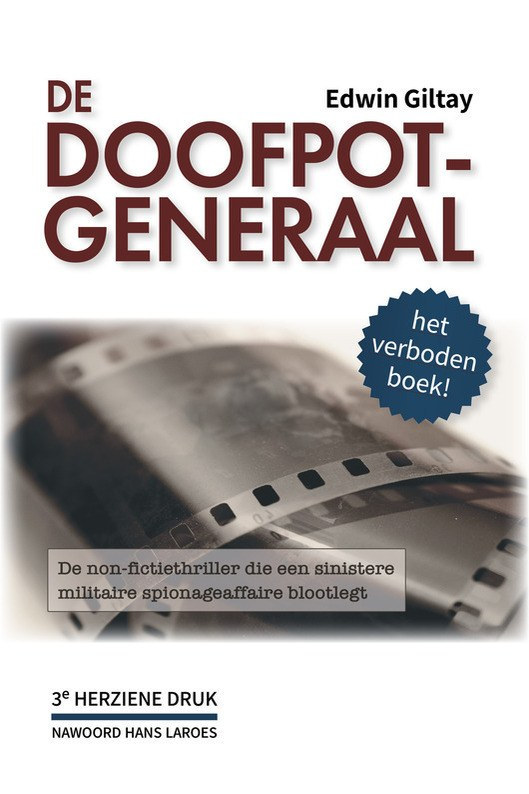
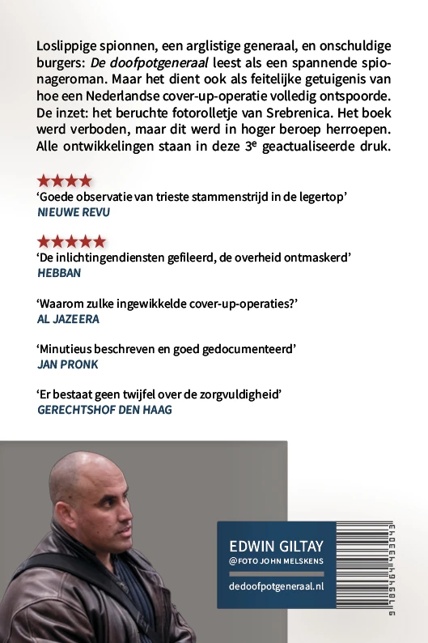
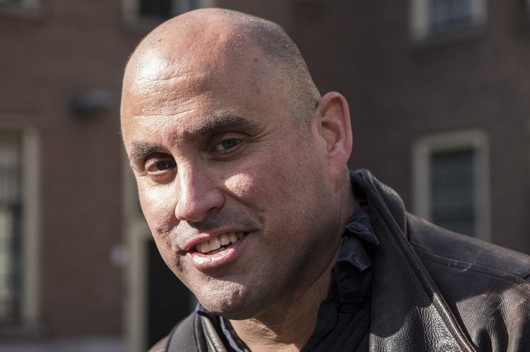

Het énige Nederlandse boek dat een volledig boekverbod overwon:
Nu gratis wereldwijd te downloaden
Loslippige spionnen, een arglistige generaal en onschuldige burgers: De doofpotgeneraal leest als een spannende spionageroman. Maar het dient ook als feitelijke getuigenis van hoe een Nederlandse cover-upoperatie ontspoorde. De inzet: foto’s van oorlogsmisdrijven in Srebrenica. Het boek werd verboden, maar het verbod werd in hoger beroep herroepen. Al deze ontwikkelingen staan in deze derde, herziene druk.
Download
en deel het vrijelijk, als een klein eerbetoon aan de strijd tegen censuur.


De doofpotgeneraal, herziene 3e druk
Edwin Giltay | Nawoord Hans Laroes
Den Haag, 2025 | PDF: gratis download
304 pagina’s, met illustraties in kleur
Deze zaak is geen afgesloten hoofdstuk. Ze heeft mondiale media-aandacht gekregen en raakt de kern van een functionerende democratie:
•
Voor de geschiedenis:
De Moeders van Srebrenica haalden het boek aan in hun rechtszaak tegen de Nederlandse Staat, als aanwijzing dat het beruchte fotorolletje, met beelden van oorlogsmisdrijven, nooit was mislukt en dat de foto’s sindsdien worden achtergehouden. De Hoge Raad oordeelde in die zaak, op andere gronden, dat de Staat deels aansprakelijk is voor de dood van ongeveer 350 mannen.
•
Voor de persvrijheid:
Het gerechtshof verwierp de twijfel aan de zorgvuldigheid van de auteur. Daarmee schiep De doofpotgeneraal een wereldwijd zeldzaam precedent: een volledig boekverbod, in hoger beroep vernietigd.
•
Voor staatsverantwoordelijkheid:
De Staat spreekt met tegenstrijdige stemmen. Op de vraag of het boek nepnieuws of een complottheorie is, was het antwoord van Justitie in feite nee: deze kritiek is “geenszins gebaseerd” op de inhoud. Defensie deed het af als een boek waarin “feiten en fictie inderdaad door elkaar heen” lopen. De vaste commissie voor Defensie van de Tweede Kamer vroeg unaniem om een reactie. Op de inlichtingenaffaire bleef die uit.
Deze 100 citaten (ook als pdf beschikbaar) belichten de misstanden rond een inlichtingenoperatie waarin geheimhouding botst met transparantie. De stemmen verhelderen een bredere strijd voor overheidsverantwoording en confronteren Defensie met haar rol in de affaire, die culmineerde in een juridische triomf over een boek- en spreekverbod (zie censuurvonnis
ECLI:NL:RBDHA:2015:15050
en arrest
ECLI:NL:GHDHA:2016:870). Die affaire betreft één aspect van het Srebrenica-dossier: het beruchte fotorolletje.
Kies de sleutelcitaten of alle citaten. De lijst is verder te filteren op spreker, jaar of land van de bron.
Valse psychiatrisering
Van “onbreekbaar” naar “volledig gestoord”: hoe Defensie klokkenluiders het zwijgen oplegt.
“Sterke persoonlijkheid”
— drs. P. van der Pol, Defensiepsycholoog, wijst Edwin Giltay af bij een sollicitatiekeuring wegens een karakter dat de drilsergeanten niet kunnen breken (1998), een beoordeling die later in officiële documenten werd herzien
— Frank de Grave, minister van Defensie, over Edwin Giltay, die misstanden had gemeld, in een officieel, nooit ingetrokken standpunt getekend door zijn secretaris-generaal (1999), in directe tegenspraak met de eerdere beoordeling van een sterk karakter
“Verdere brieven van u over dezelfde kwestie zullen voor kennisgeving worden aangenomen.”
— Reinier van Zutphen, Nationale ombudsman, weigert intrekking van het openbare ombudsmanrapport uit 1999 waarin De Graves gekverklaring van Giltay zonder tegenspraak werd opgenomen, hoewel Giltay talrijke officiële documenten indient die de beschuldigingen weerleggen
“Het onterecht psychiatriseren van wie misstanden meldt, is een terugkerend verschijnsel. Dat is beleid en de minister van Defensie treedt er niet tegen op.”
— Victor van Wulfen, jachtvlieger die zelf ook door Defensie valselijk voor gek werd verklaard
“Ik heb mijn hoogste ambtenaar niet ontslagen. Ik heb de top niet vervangen. Het is een verschrikkelijk dilemma. Ik weet ook achteraf niet of ik er verstandig aan heb gedaan.”
— Frank de Grave, voormalig minister van Defensie, reflecteert in zijn autobiografie (2018) over zijn secretaris-generaal, die Giltays gekverklaring namens hem ondertekende
“Defensie heeft zich nooit in deze zin over de heer Giltay uitgelaten.”
— Ank Bijleveld, minister van Defensie (2018), ontkent dat Defensie hem ooit als “volledig gestoord” heeft bestempeld, terwijl dat tot op heden in ombudsmanrapport 1999/507 als standpunt van de minister staat gepubliceerd
Ontkenning van de realiteit door Defensie: wat is feit en wat is fictie?
“Edwin Giltay zou na drie dagen bij [kabel- en internetbedrijf] Casema zijn ontslagen wegens irritant en onaangepast gedrag.”
— Frank de Grave, minister van Defensie, neemt in zijn officiële standpunt (1999) nog een claim op die uitsluitend is ontleend aan het verhoor van Barbara Overduyn, een militair inlichtingenofficier die kort bij Casema werkte
“Edwin Giltay heeft van 8 juni tot 23 juli 1998 als uitzendkracht zijn werkzaamheden naar behoren uitgevoerd.”
— Casema, officieel getuigschrift (1999), in directe tegenspraak met het nooit ingetrokken standpunt van minister De Grave, vastgelegd in rapport 1999/507 van de Nationale ombudsman
“Edwin Giltay heeft van 8 juni 1998 tot 27 juli 1998 als telefonische verkoper voor ons gewerkt, naar volle tevredenheid van de opdrachtgever.”
— uitzendbureau Randstad, aanbeveling (1999) over Giltays uitzendwerk: Randstad was tot de contracteinddatum de werkgever, zodat Casema hem wettelijk niet kon ontslaan, in tegenspraak met De Graves standpunt
“[Ik stelde] dat Giltay bij Casema zou zijn ontslagen wegens onaangepast militant gedrag. [Dit is] intussen schriftelijk met producties door Giltay weerlegd.”
— Barbara Overduyn, laat na 17 jaar onweersproken dat Giltay haar ontslagaantijging met bewijzen heeft ontzenuwd (2016)
“Uw brief bevat geen nieuwe aanknopingspunten of feiten op basis waarvan er rectificatie zou moeten plaatsvinden of aan u verontschuldigingen aan te bieden.”
— Jeanine Hennis-Plasschaert, minister van Defensie (2017), weigert het officiële standpunt te rectificeren en houdt vast aan weerlegde claims
“In het boek lopen feiten en fictie inderdaad door elkaar heen.”
— Ank Bijleveld, minister van Defensie (2018), blijft negeren dat Overduyn de weerlegging onbestreden liet, weigert inhoudelijk te reageren en beschuldigt Giltay publiekelijk ervan een loopje met de feiten te nemen
Het “mislukte” fotorolletje van Srebrenica: spoorloos in een web van intriges en interne strijd.
“Ik heb Giltays manuscript mogen lezen en mijn haren rezen te berge. ‘Dit wordt je niet in dank afgenomen,’ was mijn commentaar en: ‘Pas op voor repercussies!’ Ik vrees dat er op hoog niveau flink gelogen is in der tijd.”
“In De doofpotgeneraal staat het conflict tussen twee kampen binnen het Nederlandse Ministerie van Defensie centraal. Het ene kamp wilde het compromitterende Srebrenica-fotorolletje met misdaden koste wat kost vernietigen, terwijl het andere het juist wilde openbaren.”
— Radio-televizija Srbije, de Servische publieke omroep
“De doofpotgeneraal citeert een MID-medewerkster die in 1998 klaagde over de doofpotcultuur en zei dat het rolletje niet was mislukt en de foto’s worden achtergehouden.”
— Marco Gerritsen en Simon van der Sluijs, advocaten van de Moeders van Srebrenica, in hun memorie van grieven tegen de Staat der Nederlanden (2015), over Barbara Overduyn
“Elke keer dat er overheidsinformatie zoekraakt, roept iedereen direct: ‘zie je wel, net als dat fotorolletje.’
Waarom kan de overheid niet gewoon open zijn? Het is belangrijk dat ook dit raadsel voorgoed wordt opgelost.”
— Brenno de Winter, onderzoeksjournalist, roept op tot transparantie na ontvangst van het eerste exemplaar
“Veel belangrijker [dan het fotorolletje] is de zoekgeraakte fax met 239 namen van moslimmannen.”
— prof. Joris Voorhoeve, voormalig minister van Defensie en hoogleraar internationale betrekkingen, in een reactie op Giltays boek, over nóg een verdwenen Srebrenica-bewijsstuk, hetgeen het falen ernstiger maakt
“Veroordeelt gedaagde om af te zien van verdere verspreiding, publicatie en/of herdrukken van het boek De doofpotgeneraal […] en af te zien van verdere promotie […] bij lezingen, boekpresentaties en andere openbare uitingen.”
— Rechtbank Den Haag (2015), legt Giltay het zwijgen op, vijf maanden nadat de Moeders van Srebrenica het boek als bewijs hebben aangevoerd tegen de Nederlandse Staat
— Barbara Overduyn, in een fax die onweerlegbaar bewijst dat zij de spelling van haar eigen naam varieerde (1999) – later stelde zij dat Giltay, die de spelling van de MID overnam, haar naam “verkeerd” had gespeld, wat voor de rechter mede grond was het boek volledig te verbieden
“Netherlands: Court bans book on Srebrenica genocide”
— Mapping Media Freedom, destijds het meldpunt van Index on Censorship, de European Federation of Journalists en Reporters Without Borders, registreert het verbod onder deze kop als geverifieerde persvrijheidsschending
“De Nederlandse rechtbank heeft hem uitdrukkelijk verboden om zijn boek te verkopen en te promoten of met de media te communiceren, wat ongekend is in de recente geschiedenis van het land van de tulpen.”
— Dnevni avaz, Bosnisch dagblad, over Giltays boekverbod (op straffe van €1.000 per dag, tot maximaal €100.000)
“Het chilling effect dat hiervan uitgaat, is dat auteurs niet meer durven te publiceren uit angst dat wellicht al een enkele passage kan leiden tot een oordeel waarin een volledig boek wordt verboden. Giltay heeft zelfs zijn website geheel op zwart moeten zetten.”
— Boekx Advocaten, in het beroep van Giltay tegen het verbod
Het opgeheven verbod: het hof ziet geen reden aan Giltays zorgvuldigheid te twijfelen.
“Zomer 1998 toen ik bij Casema werkte, gebood Barbara Overduin mij niet meer met Edwin Giltay om te gaan. Zijn antecedenten waren zo slecht dat volgens Overduin hij deze mij niet zou durven te vertellen.”
— Casema-collega en vriend van Giltay (1999), getuigt dat Overduyn twijfel zaaide over zijn antecedenten, een werkwijze met de kenmerken van een verstoringsmaatregel
“Ik verleen u op uw aanvraag eervol ontslag met ingang van 1 januari 1998.”
— Henk van Hoof, staatssecretaris van Defensie, laat Barbara Overduyn, die in juni 1998 bij Casema infiltreerde, op 3 november 1998 met terugwerkende kracht per 1 januari 1998 uit dienst gaan en lijkt met die pennenstreek de handen in onschuld te wassen over de operatie
“Assistant department Intell MIVD, Department of Defence: mei 1995 – december 1998”
— Barbara Overduyn, in haar LinkedIn-profiel (gedenkprofiel sinds haar overlijden in 2024), waarmee ze zichzelf openlijk afficheerde als medewerkster van wat in feite de spionageafdeling was van de MID / MIVD
“Ik was bij de rechtszaak aanwezig. De MID-mevrouw leverde geen splinter bewijs voor haar claim dat wat Giltay over haar schrijft uit de duim is gezogen.”
“Anders dan de voorzieningenrechter, is het hof van oordeel dat deze onjuistheden ook onvoldoende zijn om de zorgvuldigheid in twijfel te trekken waarmee Giltay te werk is gegaan bij het schrijven van het boek. […] Wijst het gevorderde verbod af.”
— Gerechtshof Den Haag, heft zowel het boek- als spreekverbod op: een uniek arrest (2016)
“Verklaart voor recht dat de Staat onrechtmatig heeft gehandeld […] door […] de afscheiding van de [circa 350] mannelijke vluchtelingen door de Bosnische Serven te vergemakkelijken”
— Gerechtshof Den Haag, houdt de Staat voor 30% aansprakelijk in de zaak van de Moeders (2017); het boek diende in de memorie van grieven als bewijs
De politiek grijpt in: de vaste commissie voor Defensie vraagt de minister unaniem om een reactie.
“De werkelijkheid blijkt weer bizarder dan de grootste complottheorie. Het boek bewijst dat werkelijk alles kan, ook in Nederland, inclusief
bedreigingen.”
— Willem Middelkoop, internationaal bestsellerauteur en journalist, over de verstoringsmaatregelen die het boek uiteenzet, zoals psychologische intimidatie door inlichtingendiensten
“Leestip! Het boek over het inzetten van geheim agenten en het fotorolletje van Dutchbat III werd eerst door de rechtbank verboden, maar is nu
vrijgegeven zodat iedereen kan lezen wat er gebeurt in Nederland.”
— Vereniging Dutchbat III, de veteranenorganisatie van de Nederlandse soldaten die in Srebrenica waren
“Is het Kafka? Ik zou willen dat het héle boek Srebrenica ooit opengaat. Zodra de overheid dan ook openheid geeft over dit verhaal, zou dat een mooie bijvangst zijn.”
— Hans Laroes, oud-hoofdredacteur NOS Journaal, in zijn nawoord bij het boek
“De heer Giltay heeft een indrukwekkend boek geschreven over zijn ervaringen. Met mij vinden veel Kamerleden dat de minister van Defensie hem een echt antwoord
schuldig is.”
— Sadet Karabulut, Tweede Kamerlid (2017), voorafgaand aan het unanieme verzoek van de vaste commissie voor Defensie aan de minister om een reactie
“Op verzoek van Hare Majesteit de Koningin bericht ik U, dat de Koningin Uw brief van 14 oktober jl. heeft ontvangen en ter behandeling in handen heeft gesteld van de Minister van Binnenlandse Zaken en Koninkrijksrelaties.”
— Kabinet der Koningin (31 oktober 2000), pakt Giltays stap naar het staatshoofd op, één dag na De Graves poging hem de mond te snoeren
“De eerste klacht is na onderzoek door Commissie van Toezicht voor de Inlichtingen en Veiligheidsdiensten ongegrond verklaard.”
— Jeanine Hennis-Plasschaert, minister van Defensie, wijst Giltays rehabilitatieverzoek af (2017), op grond van een vermeend CTIVD-onderzoek en een ombudsmanrapport dat in 2016 is ontkracht door het Gerechtshof Den Haag
“Inlichtingentoezichthouder CTIVD heeft geen klacht van u jegens de MIVD behandeld. Er is om die reden ook geen rapport van de CTIVD.”
— generaal Onno Eichelsheim, directeur van de MIVD en nu Commandant der Strijdkrachten, ontkent het bestaan van het CTIVD-onderzoek waarachter zijn minister zich verschuilt (2017)
“Dit boek kenmerkt zich door de goed leesbare stijl. … Het NIOD beoordeelde de theorie over het fotorolletje als onwaarschijnlijk, en wat de auteur met ‘psychiatriseren’ bedoelt, is niet duidelijk.”
— dr. Klaas Dijkhoff, minister van Defensie, bekritiseert het boek in een Kamerbrief (2017), terwijl het Gerechtshof Den Haag de zorgvuldigheid van de auteur juist niet in twijfel trok
“De classificaties [propaganda, nepnieuws, complottheorieën] zijn geenszins gebaseerd op de inhoud van het boek. De term ‘staatsgevaarlijk’ is niet van toepassing.”
— dr. Ferdinand Grapperhaus, minister van Justitie (2021), in twee bevestigingen uit dezelfde brief, die er in feite op neerkomen dat de kritiek niet voor De doofpotgeneraal geldt
“Uitzendwerk, klungelende leidinggevenden, falende controles, maar dan nog met ’s lands inlichtingendiensten als extra toefje: het zijn de ingrediënten van deze true crime-thriller.”
“Spionnen zijn blijkbaar gewend om een loopje met de realiteit te nemen en die te masseren.”
— kolonel b.d. Charlef Brantz, voormalig waarnemend VN-sectorcommandant die toezicht hield op Dutchbat III, over de obstructie van Giltay door Barbara Overduyn
“Een voormalige Casema-medewerker onthult spionageactiviteiten van de militaire inlichtingendienst die erop gericht waren bewijzen van oorlogsmisdaden in voormalig Joegoslavië in de doofpot te stoppen.”
— Koninklijke Bibliotheek, catalogusbeschrijving van De doofpotgeneraal waarin het boek als non-fictie wordt geclassificeerd
Van professor tot pers: lof voor een nauwkeurig verslag van de bloedernstige affaire.
“Minutieus beschreven en goed gedocumenteerd.”
— prof. Jan Pronk, voormalig minister voor Ontwikkelingssamenwerking en VN-diplomaat, die politieke verantwoordelijkheid nam voor het falen van de Nederlandse VN-missie in Srebrenica, en die het boek al vóór publicatie aanbeval
“Het staat buiten kijf dat De doofpotgeneraal een belangrijke basis vormt voor het documenteren van de genocide in Bosnië.”
— prof. Mohamed Alsiadi, genocide- en mensenrechtenexpert aan Rutgers University, VS, ziet waarde in de Nederlandse onthullingen over Srebrenica (2025)
“Laat zich lezen als een spannende en zeer gedetailleerde sleutelroman waarin de echte namen worden onthuld.”
— Checkpoint, het met steun van het Ministerie van Defensie uitgegeven veteranenmaandblad, dat het boek recenseert en een lezersactie organiseert, terwijl het ministerie weigert in te gaan op de beschuldigingen
“Een aanrader voor iedereen die een kijkje wil nemen in de keuken van overheidsspionage in de praktijk en de gevaren die dat met zich meebrengt voor alle betrokkenen.”
— NBD Biblion, in een recensie voor de Nederlandse bibliotheken, waarna openbare bibliotheken door het hele land het boek inkopen
“Er gaat een wereld voor me open! Het boek zette me aan tot nadenken: wie is eigenlijk mijn doofpotgeneraal, of moet ik zeggen ‘doofpot-secretaris-generaal’?”
— Roelie Post, klokkenluider bij de Europese Commissie, die hetzelfde doofpotpatroon op EU-niveau herkent
“Srebrenica zorgt ook nu nog voor controverse. Een Nederlands boek dat 10 jaar geleden werd verboden, belicht andere dimensies van de zaak. Wat is zijn relaas?”
— Al Jazeera Documentary, met een fotocarrousel over de spionagezaak, de verdwenen foto’s en het door het gerechtshof vernietigde boekverbod (2025)
Hoe Giltays verhaal wereldwijd weerklank vindt, van Sarajevo tot Den Haag.
“Hierbij geef ik je een Srebrenica-bloem.”
— Munira Subašić, voorzitter van de Moeders van Srebrenica, prominente overlevende en activiste voor gerechtigheid, overhandigt auteur Edwin Giltay een rozet als herdenkingssymbool van de genocide (2017)
🇧🇦 Bron:dedoofpotgeneraal.nl/doc/subasic.pdf (persoonlijke ontmoeting met Subašić in het Haagse Paleis van Justitie, 27 juni 2017, vertaald door journaliste Naida Ribić)
“Ik wil De doofpotgeneraal in het Engels lezen.”
— Ćamil Duraković, overlevende van de genocide in Srebrenica en van 2022 tot 2026 vicepresident van Republika Srpska, die na de Srebrenica-herdenking in 2017 om een vertaling vraagt, wat leidt tot de wereldwijd gratis Engelse editie
“Hartelijk dank. Ik zie graag dat er een Bosnische vertaling komt.”
— Mirsada Čolaković, ambassadeur van Bosnië en Herzegovina, die tijdens een ontmoeting in haar ambassade in Den Haag (2018) om een Bosnische vertaling van het boek voor haar land vraagt
“Giltay bevond zich in het middelpunt van een schandaal waarin de militaire inlichtingendienst het bestaan van foto’s probeerde te verbergen, en daar deels in slaagde. Door de onthulling van de ‘affaire’ werd het boek verboden en kwam Giltay onder vuur te liggen van de inlichtingendiensten.”
— Al Jazeera Balkans, in een uitgebreid interview (2018)
“Giltay beantwoordt ook de vraag: wie is de generaal die het deksel op deze doofpot houdt? Gezien de nu lopende rechtszaken en onderzoeken in de nasleep van het Srebrenica-drama, is dit boek zeer beslist van actueel belang.”
— Onafhankelijke Defensiebond, Nederlandse militaire vakbond, steunt het boek terwijl Defensie zwijgt
“Ik feliciteer je en wil je bedanken voor het schrijven en publiceren van jouw belangrijke boek.”
— Hasan Nuhanović, overlevende van de genocide in Srebrenica die daarbij zijn ouders en broer verloor, en auteur van De tolk van Srebrenica, die Giltay feliciteert met de publicatie van diens boek in het Engels (2025)
Van geheime kluis tot herhaalde triomf: hoe de ombudsman werd teruggefloten.
“Het is een geheim dossier in de kluis. Zouden we meer informatie geven, dan zouden we m.i. Defensie om een zienswijze moeten vragen.”
— Nationale ombudsman, in een interne memo die zowel de geheime status van Giltays dossier als de inspraak van het Ministerie van Defensie bij openbaarmaking onthult
“Daarmee is er sprake van een evidente onrechtmatigheid van het bestreden besluit. [De Nationale ombudsman] zal alsnog op het Woo-verzoek [Wet open overheid] moeten beslissen.”
— Rechtbank Den Haag, die in het voordeel van Giltay beslist in zijn juridische strijd tegen staatsobstructie bij een verzoek om overheidsstukken (2023)
“Verklaart het beroep tegen het niet tijdig nemen van een besluit op het verzoek gegrond”
— Rechtbank Den Haag, die een dwangsom van €100 per dag oplegt in Giltays tweede opeenvolgende overwinning op de Nationale ombudsman (2023), dezelfde instantie die haar in diskrediet gebrachte rapport uit 1999 ongewijzigd online laat staan
“Dwangsom te laat | Woo-besluit | 19 dagen à €100,00 is
€1.900,00”
— ING Bank, bankafschrift (2024) met de bevestiging van de dwangsombetaling door de Nationale ombudsman aan Giltay, het tastbare resultaat van de rechterlijke uitspraak over het uitstel
“De Doofpotgeneraal heb ik met veel plezier helemaal gelezen tijdens mijn kerstverlof. Mijn complimenten voor de zeer uitgebreide achterliggende documentatie en gedetailleerdheid van het verhaal!”
— Karin Vaalburg, senior juridisch adviseur Nationale ombudsman, prijst in e-mailcorrespondentie (2024) de documentatie in het boek, maar zegt een geplande bespreking af
“De doofpotgeneraal is een zeer zeldzaam voorbeeld in onze collectie van een auteur die met succes een boekverbod heeft aangevochten.”
— Banned Books Museum, Tallinn, bij de lancering van de Engelse vertaling als gratis internationale pdf (2024), gefinancierd met de dwangsommen die de Nationale ombudsman betaalde
“[Dat] het boek maatschappelijke impact heeft gehad, tot discussie heeft geleid en een rol heeft gespeeld bij de procedure die leidde tot het arrest van de Hoge Raad”
— Tweede Kamer (2026), erkent via de Stafdienst Juridische Zaken de rol van het boek in de zaak van de Moeders, in haar afwijzing van Giltays Woo-verzoek
“De documenten die de juridische kosten onthulden [ruim 2,6 miljoen euro in de Srebrenica-zaken], werden gepubliceerd na een informatieverzoek van journalist Edwin Giltay, die een boek schreef over hoe de Nederlandse Staat informatie over zijn rol in Srebrenica trachtte te verdoezelen.”
— Balkan Insight, Engelstalig Balkan-nieuwsportaal
— Ank Bijleveld, minister van Defensie (2018), in een reactie op mediavragen over het arrest van het Gerechtshof Den Haag, dat het verbod op het boek ophief en de zorgvuldigheid van de auteur niet in twijfel trok
“Zij zouden voor de rechter moeten worden gebracht.”
— rechter Solomy Balungi Bossa van het Internationaal Strafhof, als hoofdgast bij een publiek debat, in antwoord op de vraag van de auteur wat zij vindt van hen die bewijs van oorlogsmisdrijven in de doofpot stoppen (2026)
Sterren en lof: hoe recensenten het onthullende relaas waarderen.
★★★★★
“Het is bijna verstikkend om te lezen hoe de inlichtingendiensten te hoop lopen om onschuldige burgers het leven zuur te maken. Zo’n doofpot moet gesmoord worden.”
— Boekje Pienter, militaire leeswijzer, in een vijfsterrenrecensie
“Doofpotten, censuur en de schaduw van een genocide die wellicht was te voorkomen […]. De ingrediënten van een thriller zijn er allemaal, behalve dat de auteur, Edwin Giltay, niets heeft hoeven verzinnen.”
“Hooggeplaatsten proberen hun straatje schoon te vegen, maar worden door eigen geklungel aan de schandpaal genageld. Als het geen bloedernstige zaak was, zou
de lezer het kunnen opvatten als een magistrale grap. De eerste de beste padvindersclub zou het vermoedelijk beter aanpakken.”
★★★★★
“Edwin Giltay beschrijft hoe mis het is met onze inlichtingendiensten, toegedekt door Defensie, de Nationale Ombudsman en met beschadigde ministers in het verlengde. Het niet voorzien zijn van juiste gegevens ontslaat hen niet van de plicht om serieuze waarheidsvinding te betrachten.”
“Je zou denken aan een slechte grap maar het is echt gebeurd. […] In een nuchtere schrijfstijl met oog voor detail beschrijft Edwin Giltay in De doofpotgeneraal het klungelige optreden van twee spionnen met gebrekkige omgangsvormen waarvan hij getuige was.”
— Haarlems Weekblad, verbaast zich over de ware toedracht
“Alsof de Militaire Inlichtingendienst niet zelf al voor hun slechte naam gezorgd heeft met al het gelieg en gedraai rondom bijvoorbeeld het fotorolletje. In plaats dat er eindelijk eens volledige openheid wordt gegeven over wat daar toen speelde, maakt men zich druk om een boek.”
— Thrillerlezersblog, hekelt de omgekeerde prioriteiten
Journalisten, kenners, een oud-politicus en een chatbot herkennen het patroon.
“Edwin Giltay is een gewone burger, maar raakte toch zijdelings bij het schandaal betrokken. Dat liet hem niet meer los en hij schreef er het boek de Doofpotgeneraal over.”
— EenVandaag, actualiteitenrubriek van de publieke omroep
“En toch, het allerknapste aan jou is dat je niet hebt opgegeven. Dat maakt je dapper.”
— Philip Dröge, bestsellerauteur en onderzoeksjournalist, bij ontvangst van de tweede, herziene druk (2016), over Giltays volharding, wrang door het verbod op spreken over eigen levenservaringen
“Zou goed zijn als externe, onafhankelijke partij ALLE interne zogeheten huishoudelijke onderzoeken gedaan door Defensie eens tegen het licht hield, bij klokkenluiders als @victorvanwulfen @fredspijkers @edwingiltay werd geen goed onderzoek gedaan #doofpot”
— Jan Born, onderzoeksjournalist, pleit op Twitter voor onafhankelijk onderzoek
“Dit is een belangrijk boek over een belangrijke affaire, waarin de geheime dienst bewijsmateriaal van oorlogsmisdaden tracht te verduisteren ten koste van een willekeurige, maar verrassend attente burger.”
— Roel van Duijn, politicus die zelf decennialang door het inlichtingenwezen werd gevolgd
“Indrukwekkende overwinning op censuur – het ongedaan maken van een volledig boekverbod spreekt boekdelen over je vastberadenheid. Het falen in Srebrenica verdient onderzoek dat verder gaat dan gepolijste rapporten.”
— Grok, xAI’s chatbot, prijst op X de censuuroverwinning, volgens Grok zelf de eerste keer dat xAI publiekelijk een boek onderschreef (2025)
Van bankentop tot Europees Parlement: de affaire vindt weerklank tot in Brussel.
“Ik heb het boek gekocht en gelezen. Werkelijk schandalig, dat wegkijkende overheidsapparaat. Ons land niet waardig. Ook ben ik onder de indruk van jouw gedegen geschiedschrijving.”
— baron Rik van Slingelandt, oud-topman van ABNAMRO (2024)
🇳🇱 Bron: persoonlijke e-mail aan de auteur, 23 augustus 2024 (quote goedgekeurd)
“Over het mislukte fotorolletje uit Srebrenica, en over de warboel van intriges en rookgordijnen rond het verdwijnen van dit mogelijke bewijsmateriaal van oorlogsmisdaden, schreef Edwin Giltay in 2014 De doofpotgeneraal.”
— de Volkskrant, verbindt het boek met de genocide van 1995 tijdens de Bosnische oorlog
“Als fractie hebben wij besloten Reinier van Zutphen niet als kandidaat te steunen. […] Ik waardeer uw toewijding aan deze kwestie oprecht.”
— Anders Vistisen, Deens Europarlementariër en chief whip van Patriots for Europe (2024), over de verkiezing van de Europese Ombudsman, na ontvangst van het boek; Van Zutphen, een van de zes kandidaten, verloor
“Uw zorg om transparantie en integriteit in het ambt van de Europese Ombudsman deel ik.”
— Moritz Körner, Duits liberaal Europarlementariër, zegt na ontvangst van De doofpotgeneraal toe Giltays voorbeelden in het selectieproces mee te wegen en in de discussie in te brengen (2024)
“Edwin Giltay beschrijft hoe zijn rechten door de Staat zijn opgeofferd om de doofpot rond het fotorolletje uit Srebrenica gesloten te houden. Andermaal wordt het vermoeden gevoed dat de Staat verantwoordelijk is voor het laten verdwijnen van het beruchte fotorolletje.”
— Marco Gerritsen en Simon van der Sluijs, advocaten van de Moeders van Srebrenica
Hoe het verbod het boek alleen maar begeerlijker maakte.
“Zeker, maar alleen met serieus onderpand. Dit boek is verboden en dus van onschatbare waarde geworden.”
— Harry van Bommel, Tweede Kamerlid, reageert een week na het totaalverbod via Twitter op de vraag of het verboden boek te leen is uit de bibliotheek van zijn partij (21 december 2015)
“De Doofpotgeneraal mag toch weer verkocht worden, zo besloot het gerechtshof Den Haag vandaag. Het boek handelt over het verkeerd ontwikkelde fotorolletje waarop beelden zouden staan van omgekomen Bosnische moslims in Srebrenica.”
— prof. Maarten van Rossem, meldt de vrijgave op de dag van het arrest (12 april 2016)
“Het is onvoorstelbaar dat een grondig onderzocht en gedocumenteerd boek wordt verboden. Bovendien stuurde Giltay zijn manuscript vooraf naar de minister van Defensie, die geen bezwaar had.”
— Caspar ten Dam, conflictanalyticus en Srebrenica-expert
“Ik heb ’m nog bij Athenaeum kunnen scoren toen ’ie nog verboden was.”
— Bojan Breljaković, podcastmaker, koopt het boek bij deze Amsterdamse boekhandel en toont daarmee de vastberadenheid van lezers om verboden vruchten te plukken
“De doofpotgeneraal werd in Nederland bij gerechtelijk bevel verboden. Giltay ontkende valse informatie te hebben verstrekt en in 2016 werd het verbod door het Gerechtshof Den Haag opgeheven.”
— Koran Sindo, Indonesisch dagblad, in een overzicht van verboden boeken van de 21e eeuw
“Het Gerechtshof Den Haag gaf aan dat De doofpotgeneraal voldoende steun vindt in de feiten en een bijdrage levert aan het maatschappelijk debat over Srebrenica.”
— Dagblad Suriname, in een beschouwing over persvrijheid onder de kop ‘Wat is een politiestaat?’ (2024)
De feiten in deze affaire zijn zo ongewoon dat ze om documentatie vragen. Daarom is vrijwel elke bewering in dit essay verifieerbaar: elke bronverwijzing opent een bewijskaart met de aangehaalde passage, de herkomst ervan en een link naar het oorspronkelijke document. Verwijzingen naar het boek zelf openen het e-boek of de synopsis. Een geannoteerde versie van dit essay is ook als pdf beschikbaar, in het Nederlands, Engels, Duits, Frans, Spaans en Bosnisch.Inhoud essay
Op 12 april 2016 wees het Gerechtshof Den Haag een baanbrekend arrest, dat zowel het volledige verbod op De doofpotgeneraal als het spreekverbod van de auteur ophief. Beide had de voorzieningenrechter van de Rechtbank Den Haag vier maanden eerder opgelegd, op eis van een oud-medewerkster van de Militaire Inlichtingendienst (MID) die in het boek voorkomt
(bron).
Het hof deed meer dan de vrije meningsuiting herstellen: “Anders dan de voorzieningenrechter, is het hof van oordeel dat deze onjuistheden [aangaande de personalia van de eiseres] ook onvoldoende zijn om de zorgvuldigheid in twijfel te trekken waarmee [auteur Edwin Giltay] te werk is gegaan bij het schrijven van het boek”
(jurisprudentiecode ECLI:NL:GHDHA:2016:870, rechtsoverweging 4.9). De oud-medewerkster had ook geëist dat Giltay zijn eigen werk in drie landelijke dagbladen tot pure fictie zou verklaren. Het hof stelde vast dat haar rol in het boek, anders dan zij suggereerde, niet “puur verzonnen” of “volstrekte fictie” is
(rechtsoverwegingen 3.1 en 4.10).
Deze combinatie, een vernietigd totaalverbod mét rechterlijke rehabilitatie van de auteur, is vrijwel ongeëvenaard. Het Banned Books Museum noemt het “een zeer zeldzaam voorbeeld in onze collectie van een auteur die met succes een boekverbod heeft aangevochten”
(bron). Datzelfde arrest vat bovendien de kernclaim samen, in de woorden van het hof zelf: dat “het rolletje met foto’s die een militair van Dutchbat [het Nederlandse VN-bataljon] heeft gemaakt in Srebrenica, niet per ongeluk is vernietigd, maar bewust is achtergehouden door de MID”. Het hof stelde de juistheid hiervan niet vast, maar oordeelde wél dat de stelling thuishoort in “een debat van maatschappelijk belang” en dat een verbod “de fundamentele uitingsvrijheid in de kern” zou aantasten
(ECLI:NL:GHDHA:2016:870, r.o. 4.5).
In de Nederlandse rechtsgeschiedenis vormt dit een uniek precedent. Terwijl schrijvers als Multatuli zegevierden over aanvallen op specifieke passages, is De doofpotgeneraal, voor zover bekend, het enige Nederlandse boek waarvan een volledig verbod
(ECLI:NL:RBDHA:2015:15050)
gerechtelijk is opgeheven.
De enige twee onjuistheden in het boek die volgens het hof onbetwist vaststonden, een leeftijd en een naamspelling, leken eerder op tradecraft (spionagevakmanschap) dan op een fout van de auteur: inlichtingenpersoneel wijkt wel vaker af van zijn echte personalia (e-boek, p. 170). Zo verweet de eiseres de auteur dat hij haar naam als Overduin spelde, terwijl hij die spelling had overgenomen uit een onderzoek van Defensie (bron) en er bovendien een brief opdook die zij zelf had ondertekend als Overduijn
(bron, ECLI:NL:GHDHA:2016:870, r.o. 4.9). Officieel luidde haar naam weer anders: Overduyn (bron).
Het arrest is opgenomen in de juridische vakliteratuur (bron, bron) en wordt sindsdien in persvrijheidszaken door andere rechters aangehaald. Zo verwees de Rechtbank Rotterdam ernaar in een procedure die de toenmalige Surinaamse president Chan Santokhi in 2024 vergeefs had aangespannen tegen een boek over corruptie in regeringskringen (ECLI:NL:RBROT:2024:1770). De juridische zege is echter slechts een deel van het verhaal. Wat deze zaak zo belangrijk maakt, is wat De doofpotgeneraal aan het licht brengt, en hoe de overheid daarop heeft gereageerd. Of beter gezegd: hoe zij daar niet op heeft gereageerd.
De regering spreekt zichzelf tegen
De reactie van de Nederlandse regering op dit boek, waarvan het gerechtshof het verbod ophief, vertoont een opvallende interne tegenstrijdigheid. Eind 2020 bekritiseerde het Ministerie van Justitie de uitgever van de tweede druk. Giltay vroeg Justitie daarop per brief of ook De doofpotgeneraal onder nepnieuws, complottheorieën of anti-overheidspropaganda valt, en zo ja, met welke passages. De minister antwoordde in 2021 dat die classificaties “geenszins gebaseerd” zijn op de inhoud van het boek
(bron).
Passages noemde hij niet.
Justitie wees in het boek dus niets aan wat zo’n etiket rechtvaardigt. In 2018 deed de minister van Defensie het echter af als een boek waarin “feiten en fictie inderdaad door elkaar heen” lopen
(bron). Welke feiten fictie zouden zijn, zei zij niet. Dit plaatst het publiek voor een onmogelijke keuze.
Het gebrek aan eensluidendheid raakt een staatsrechtelijk beginsel: de Grondwet draagt de ministerraad op de eenheid van het regeringsbeleid te bevorderen (bron). Toch nemen hier twee ministers uit hetzelfde kabinet uiteenlopende standpunten in over hetzelfde werk, terwijl de rechter al in 2016 geen reden zag te twijfelen aan de zorgvuldigheid van de auteur. Volgens de ene minister berust het etiket nepnieuws geenszins op het boek, volgens de andere lopen feiten en fictie erin door elkaar.
Wie heeft gelijk: de minister van Justitie, of de minister van Defensie, die al decennialang weigert opheldering te geven? In 2017 vroeg de vaste commissie voor Defensie van de Tweede Kamer de minister unaniem om een reactie op de brief waarin Giltay de beschuldigingen uit het boek herhaalde
(bron).
De minister antwoordde de Kamer, maar over de inlichtingenaffaire zweeg hij. Kan een regering als scheidsrechter van de waarheid fungeren wanneer haar eigen ministers elkaar tegenspreken?
Wat het boek onthult: de Srebrenica-doofpot
Wat heeft tot dit institutionele stilzwijgen geleid? De doofpotgeneraal beschrijft minutieus hoe een Nederlandse militaire inlichtingenoperatie volledig uit de hand liep. Die operatie omvatte het bespioneren van burgers op hun werkplek en het achterhouden van fotografisch bewijs met betrekking tot de genocide van Srebrenica in 1995. Meer dan achtduizend Bosniakken (Bosnische moslims) werden toen vermoord, nadat Nederlandse VN-troepen hadden gefaald in de bescherming van hun enclave. De titel is de bijnaam van de landmachtgeneraal die in 2002 opstapte na het officiële onderzoeksrapport over de val van de enclave. Het boek noemt hem bij naam
(e-boek, pp. 111–122).
Het fotorolletje, waarop luitenant Rutten lichamen van vermoorde mannen had vastgelegd
(bron), was volgens deskundigen met opzet vernield
(bron).
Het boek beschrijft hoe deze operatie in 1998 begon met de infiltratie van militair inlichtingenofficier Barbara Overduyn in Giltays civiele werkplek in Delft, het kabelbedrijf Casema. Zij benaderde Giltay, die kort daarvoor bij de marine had gesolliciteerd, en adviseerde hem, zo verklaarde zij later zelf, “een open sollicitatiebrief te schrijven aan de MID” (bron). Ze sprak daarbij openlijk over intern verzet binnen haar inlichtingendienst tegen het achterhouden van de Srebrenica-foto’s. Het rolletje was volgens haar niet mislukt maar lag “gewoon in het MID-archief” (e-boek, p. 23).
Volgens het boek was Overduyns opdracht om Giltay te werven vooral een list: op zijn afdeling kon zij zelf in de gaten worden gehouden, nadat er twijfels waren gerezen over haar functioneren. Een tweede infiltrant, in het boek ontmaskerd als de echtgenote van de generaal uit de titel, noteerde heimelijk welke staatsgeheimen Overduyn er prijsgaf, en stal zelf een toegangskaart. Daarmee drong een fotograaf het pand van Casema binnen om Overduyn daar aan het werk vast te leggen. Met die aantekeningen en opnamen werden Overduyn en haar chef, die zich net als zij tegen het achterhouden van de Srebrenica-foto’s verzette, bij de MID onder druk gezet om op te stappen. Zo werd volgens het boek het interne verzet gebroken
(synopsis).
Nadat Giltay bij de Nationale ombudsman had geklaagd over onder meer de handelwijze van de MID bij Casema
(bron),
beschuldigde Overduyn hem ervan “irritant”, “onaangepast” en “volledig gestoord” te zijn
(bron).
Volgens een bron uit inlichtingenkringen die in het boek wordt aangehaald, wekte zijn klacht haar jaloezie: zij zou zich gedwarsboomd hebben gevoeld in haar ambitie zelf klokkenluider te worden
(e-boek, p. 101).
Haar uitspraken deed ze in een onderzoek dat de MID naar zichzelf instelde. Dat de dienst zichzelf zou onderzoeken, was op 26 januari 1999 bij de MID afgesproken tussen zijn plaatsvervangend hoofd en de klachtbehandelaar van de ombudsman
(bron). Het verslag van dat zelfonderzoek, opgesteld in opdracht van datzelfde plaatsvervangend hoofd, nam minister van Defensie Frank de Grave in zijn reactie aan de ombudsman over als officieel standpunt. Daarmee verschoof hij het onderwerp: op een klacht over Defensie antwoordde hij met een oordeel over het karakter van de klager.
Dat dit essay het hier over de auteur heeft, komt niet omdat zijn zaak zwaarder weegt dan die van de nabestaanden. Het komt omdat de Nederlandse Staat het persoonlijk maakte, en omdat het beschadigen van de boodschapper al bijna dertig jaar de manier is om de boodschap buiten de deur te houden: waar zijn de foto’s van Srebrenica gebleven?
Giltay meldde de ministeriële uitlatingen over hem in juni 1999 als laster bij de hoofdofficier van justitie
(bron).
Twee weken later zette de minister zowel het hoofd van de Militaire Inlichtingendienst als zijn plaatsvervanger aan de kant wegens een “ernstige beoordelingsfout”
(bron,
bron).
De twee hadden de bewindsman niet ingelicht over een onderzoek van de dienst zelf naar rechts-extremistisch gedrag van Dutchbatmilitairen in Srebrenica. Die plaatsvervanger was dezelfde in wiens opdracht het verslag over Giltay was opgesteld
(e-boek, p. 59).
Toen Giltay in juli 1999, op advies van advocaat Gerard Spong (bron), ook aangifte wilde doen bij de politie, weigerden de rechercheurs om die op te nemen. Pas nadat de districtschef Giltays klacht daarover in maart 2000 op twee punten gegrond had verklaard en daarvoor zijn verontschuldiging had aangeboden
(bron), werd de aangifte wegens smaad en laster in juni 2000 alsnog opgenomen bij de Haagse politie.
In die aangifte legde Giltay ook vast wat Overduyn over het fotomateriaal had gezegd: “Ongevraagd verklaarde zij dat het mislukken van de zogenaamd mislukte ontwikkeling van de gemaakte foto’s een fabel was en dat zij zelf de foto’s had gezien”
(bron).
Als dat klopt, is het rolletje pas vernield nadat de foto’s waren afgedrukt.
Drie maanden na zijn aangifte kreeg Giltay schriftelijk bericht dat het onderzoek “geen resultaat heeft opgeleverd” en in de administratie werd “opgelegd”, weggelegd dus
(bron).
Over de foto’s zegt die brief niets.
Daarop riep Giltay de hulp in van Hare Majesteit koningin Beatrix. Er volgde een interventie: het staatshoofd stelde Giltays brief ter behandeling in handen van de minister van Binnenlandse Zaken
(bron).
Hierop erkende burgemeester Wim Deetman van Den Haag, beheerder van het politiekorps, tegenover Giltay formeel dat zijn korps onjuist jegens hem had gehandeld. Hem was toegezegd dat hij de afhandeling van zijn klacht over de geweigerde aangifte vooraf in concept zou zien, en dat was niet gebeurd
(bron,
bron).
Met Overduyns uitspraken over de foto’s is, voor zover uit de stukken blijkt, nooit iets gedaan. De karakterisering door de minister staat daarentegen nog steeds online, in het openbare rapport van de Nationale ombudsman uit 1999
(bron).
Dit ondanks aanzienlijk tegenbewijs: een Defensiekeuring uit 1998 die een sterk karakter constateerde
(bron),
professionele aanbevelingen van multinationals, waaronder IBM en Deloitte
(bron,
bron,
bron,
bron),
en de rechterlijke erkenning dat er geen reden is om aan Giltays zorgvuldigheid te twijfelen
(ECLI:NL:GHDHA:2016:870, r.o. 4.9).
Hoewel de karakterisering nooit door Defensie is ingetrokken, ontkende minister van Defensie Ank Bijleveld in 2018 botweg dat het ministerie zich ooit in die zin over Giltay had uitgelaten
(bron). Dat die kwalificatie werkelijk is gebruikt, ligt echter niet alleen in dat ombudsmanrapport vast
(bron). Al sinds augustus 1999 staat zij zwart op wit bij het Openbaar Ministerie
(bron), en sinds 2002 ook bij de rechter. Toen Giltay zich bij het Gerechtshof Den Haag beklaagde over het uitblijven van vervolging, tekende het hof op dat Overduyn, “werkzaam bij de MID”, inderdaad had verklaard dat Giltay “volkomen gestoord” was
(bron).
Het verhaal op de kaart
In achttien dia’s vertelt Edwin Giltay hoe een rolletje met foto’s van oorlogsmisdaden bij Srebrenica in 1995 verdween bij de Militaire Inlichtingendienst, en hoe de Staat omging met hem, de burger die erover schreef. Drie kaarten voeren van Europa naar het Haagse regeringscentrum. Elke dia linkt naar bewijskaarten.
Srebrenica · 1995
Op 11 juli 1995 viel Srebrenica, de enclave die het Nederlandse VN-bataljon Dutchbat III moest beschermen; meer dan achtduizend Bosniakken werden vermoord. Twee dagen later fotografeerde Dutchbatluitenant Johannes Rutten lichamen van geëxecuteerde mannen. Zijn rolletje moest oorlogsmisdaden laten zien.
Terug in Nederland gaf Rutten het fotorolletje af aan de Militaire Inlichtingendienst (MID). Officieel mislukte de ontwikkeling: “gewoon pech”, verklaarde de MID-majoor die het bij hem ophaalde. Volgens oud-landmachtbevelhebber Couzy was het “een verhaal wat natuurlijk nooit iemand gelooft”.
In 1998 werkte Edwin Giltay als uitzendkracht bij dit civiele kabelbedrijf. Op zijn afdeling infiltreerde militair inlichtingenofficier Barbara Overduyn, die hem aanraadde bij de MID te solliciteren. Zij zei, ook tegen collega’s, dat het rolletje “gewoon in het MID-archief” lag en dat zij de afdrukken zelf had gezien.
Na Giltays klacht bij de Nationale ombudsman onderzocht de MID zichzelf. De majoor die in 1995 het fotorolletje had opgehaald, verhoorde Overduyn. Zij noemde Giltay daarbij “volledig gestoord”. Eind 1999 drukte de ombudsman dat zonder tegenspraak af in rapport 1999/507, dat nog altijd online staat.
De minister had het oordeel “volledig gestoord” al in maart 1999 overgenomen als zijn officiële standpunt. Een verzoek om rectificatie wees hij in 2000 af: “Op verdere brieven uwerzijds zal niet meer worden gereageerd.” Ingetrokken is het oordeel nooit; in 2018 ontkende Defensie het echter ooit te hebben geuit.
Toen Giltays aangifte van smaad en laster tegen Overduyn zonder resultaat werd weggelegd, riep hij in 2000 de hulp in van koningin Beatrix. Zij stelde zijn brief in handen van de minister van Binnenlandse Zaken. De Haagse burgemeester Deetman erkende hierop dat zijn politie onjuist had gehandeld; vervolgd is Overduyn nooit.
Het actualiteitenprogramma NOVA liet het blanco rolletje van Rutten onderzoeken door een omroepfotobedrijf en door Agfa-deskundigen in München. Beide concludeerden dat het zo grondig was vernield “dat dit alleen met opzet gebeurd kan zijn”. Defensie houdt vast aan een ontwikkelfout.
Toezichthouder CTIVD schreef in 2009 dat zij Giltays klacht niet kon onderzoeken. Toch beriep Defensie zich in 2017 op een CTIVD-onderzoek toen zij weigerde het oordeel over hem in te trekken. Volgens de directeur van de MIVD, zoals de MID nu heet, is er echter “geen rapport van de CTIVD”.
Rutten getuigde hier in 2011, in het proces tegen Radovan Karadžić, dat hij zijn rolletje aan de MID gaf en hoorde dat de foto’s waren mislukt. Volgens advocaten van ruim tweehonderd Dutchbat III-leden liggen in het MIVD-archief afdrukken van zeker acht rolletjes. De aanklager zei in 2017 daar geen kennis van te hebben.
In 2014 gaf Giltay het manuscript van zijn boek De doofpotgeneraal vóór publicatie af bij de ministers van Defensie en Binnenlandse Zaken. Geen van beiden beriep zich op staatsgeheim. Minister Plasterk schreef in 2015: “Ik zal er verder niet inhoudelijk op reageren.”
Op eis van Overduyn legde de Rechtbank Den Haag in 2015 een volledig boek- en spreekverbod op. Het gerechtshof hief het in 2016 op: het zag geen reden aan Giltays zorgvuldigheid te twijfelen, en de vraag of het rolletje “bewust is achtergehouden door de MID” hoorde thuis in “een debat van maatschappelijk belang”.
In 2017 vroeg de vaste commissie voor Defensie de minister unaniem om een reactie op Giltays brief. Het antwoord luidde dat “niet duidelijk” is wat de auteur met “psychiatriseren” bedoelt. Vier maanden eerder had Defensie geweigerd de gekverklaring “volledig gestoord” in te trekken.
De Moeders van Srebrenica haalden het boek aan in hun rechtszaak tegen de Staat, als aanwijzing dat het rolletje nooit was mislukt en dat de foto’s sindsdien worden achtergehouden. De Hoge Raad oordeelde in die zaak in 2019, op andere gronden, dat de Staat deels aansprakelijk is voor de dood van ongeveer 350 mannen.
In 2018 deed minister Bijleveld van Defensie De doofpotgeneraal af als een boek waarin “feiten en fictie inderdaad door elkaar heen” lopen. De minister van Justitie sprak dat in 2021 in feite tegen. Op de vraag of het boek nepnieuws of een complottheorie is, antwoordde hij dat die etiketten “geenszins gebaseerd” zijn op de inhoud.
De Nationale ombudsman had Giltays dossier opgeborgen als “geheim dossier in de kluis”. In 2023 blokkeerde hij Giltays verzoek om documenten. De rechtbank noemde dat “evident onrechtmatig” en legde later in een tweede zaak een dwangsom op. Daarmee financierde Giltay de gratis Engelse editie.
In 2024 werd de gratis Engelse editie, The Cover-up General, gepresenteerd in het Banned Books Museum in Tallinn. Het museum nam haar op naast de ‘verboden’ Nederlandse editie en noemt het boek “een zeer zeldzaam voorbeeld in onze collectie van een auteur die met succes een boekverbod heeft aangevochten”.
Het boek is sinds 2016 weer vrij te lezen, maar het oordeel van Defensie over Giltay is nooit ingetrokken. Om meer documenten openbaar te krijgen, procedeert hij momenteel bij de Rechtbank Den Haag. De foto’s van Rutten zijn nooit vrijgegeven.
Bezuidenhoutseweg 151, Den Haag (huidige vestiging)
CTIVD
Anna van Saksenlaan 50, Den Haag
Internationaal
Srebrenica
Potočari bij Srebrenica, Bosnië en Herzegovina
Joegoslaviëtribunaal
Churchillplein 1, Den Haag
Bedrijven
Casema
Brassersplein 2, Delft
Agfa
München, Duitsland
Banned Books Museum
Tallinn, Estland
Een doofpot met internationale dimensie
Waar de lasterzaak een binnenlandse aangelegenheid bleef, reikte de doofpot rond het fotomateriaal tot in de internationale rechtsgang. Bij het Joegoslaviëtribunaal in Den Haag kwam het fotorolletje ter sprake in het proces tegen Radovan Karadžić, de Bosnisch-Servische leider die mede voor de genocide in Srebrenica tot levenslang werd veroordeeld. In 2011 getuigde daar Johannes Rutten, de luitenant van Dutchbat III die op 13 juli 1995 bij Potočari lichamen van geëxecuteerde Bosniakken fotografeerde. Daarbij werd vastgelegd dat hij zijn rolletje na terugkeer overdroeg aan de MID. Vervolgens werd hem meegedeeld dat de foto’s bij het ontwikkelen waren mislukt
(bron).
Het was contra-inlichtingenmajoor De Ruyter die het rolletje in ontvangst nam (bron). Het NIOD-rapport, het door het kabinet gelaste onderzoek naar de val van Srebrenica, tekent over hem op dat hij het bataljon al tijdens de opleiding had voorgehouden dat de bevolking van de enclave uit “louter tuig” bestond (bron). Dezelfde majoor nam in februari 1999 het verhoor van Overduyn af waaruit het ministeriële standpunt voortkwam dat Giltay “volledig gestoord” was (bron). Op 6 december 2002 getuigde hij onder ede voor de parlementaire enquêtecommissie Srebrenica over het lot van datzelfde rolletje (bron). De ontmenselijking van de moslimbevolking, het verdwenen bewijs en het gek verklaren van Giltay delen daarmee niet alleen een ministerie, maar ook een functionaris.
Het rolletje van Rutten staat niet op zichzelf. Eind 2016 kondigden de advocaten Klaas Arjen Krikke en Michael Ruperti namens ruim tweehonderd leden van Dutchbat III aan dat zij via de rechter inzage in beeldmateriaal zouden vorderen: afdrukken van ten minste acht fotorolletjes. Die liggen volgens hen in het archief van de Militaire Inlichtingen- en Veiligheidsdienst (MIVD), zoals de MID inmiddels heet
(bron).
Of die vordering is ingesteld, is nooit bekend geworden.
Krachtens hoofdstuk VII van het VN-Handvest waren alle staten, Nederland inbegrepen, verplicht volledig met het tribunaal samen te werken, tot en met het overleggen van bewijsmateriaal (bron).
Toen Giltay het Joegoslaviëtribunaal naar de rolletjes vroeg (bron), antwoordde het parket van de aanklager op 3 oktober 2017 dat het geen kennis had van de “acht fotorolletjes”
(bron).
Beelden van Dutchbat telden in de genocideprocessen wel mee, maar van de rolletjes in het MIVD-archief wist het parket niets.
Hoe zwaar het Nederlandse falen in Srebrenica weegt, staat politiek allang vast: in 2002 trad het voltallige kabinet af na het NIOD-rapport
(bron).
De fotorolletjes horen bij datzelfde dossier. De Ruyter hield in zijn verhoor voor de enquêtecommissie staande dat Ruttens rolletje bij het ontwikkelen was mislukt: het betrof volgens hem een opeenstapeling van “situaties waarin de wet van Murphy toesloeg”, kortom “gewoon pech” (bron).
Het NIOD had al geconcludeerd dat het rolletje door “een menselijke fout” was mislukt, en dat “bij gebrek aan concrete bewijzen” de verdenking van opzet geen stand hield (bron).
Volgens hetzelfde rapport zaten op het rolletje ook “opnamen van het scheiden van mannen en vrouwen en de rol van Dutchbatters daarbij” (bron). Dat die foto’s een motief waren om het rolletje te vernietigen, achtte het NIOD onwaarschijnlijk. Wie het om die reden vernietigde, moest de foto’s immers eerst hebben gezien, zo redeneerde het instituut (bron). Bij die redenering maakt het rapport geen melding van de aangifte van Giltay uit 2000, waarin hij vastlegde dat de ontwikkeling volgens Overduyn niet was mislukt en dat zij de foto’s zelf zou hebben gezien (bron).
Al vóór het NIOD-rapport was de officiële lezing omstreden, tot in de krijgsmacht zelf. Zo gaf generaal Hans Couzy, in 1995 bevelhebber van de landmacht waartoe Dutchbat behoorde, in 1998 als oud-bevelhebber zijn eigen lezing: de MID wilde het rolletje zélf ontwikkelen. De gedachte was volgens hem dat het daar “honderd procent safe” zou zijn. Dat het uitgerekend daar werd verknoeid, noemde hij “een verhaal wat natuurlijk nooit iemand gelooft”
(bron). Kolonel Charlef Brantz, in juli 1995 waarnemend commandant van de VN-sector waaronder Dutchbat viel, uitte naar eigen zeggen al in augustus 1995 in het actualiteitenprogramma NOVA zijn twijfel aan de uitleg van zijn eigen landmacht. Een organisatie die zichzelf serieus neemt, kan het zich volgens hem niet veroorloven “op een dergelijke nonchalante manier met dat materiaal om te gaan”
(bron).
Ook Hans Laroes, oud-hoofdredacteur van het NOS Journaal, schreef in 2014 in het nawoord van De doofpotgeneraal over het verhaal dat het ontwikkelen was mislukt: “Niemand die ik sprak geloofde het; geen journalist zonder twijfel aan en cynisme over deze [officiële] lezing”
(e-boek, p. 215).
Het totaalverbod van 2015 trof ook zijn nawoord. Zo werd destijds zelfs zijn breed gedeelde scepsis het zwijgen opgelegd.
Meer dan een verboden boek
De internationale aandacht voor De doofpotgeneraal weerspiegelt niet alleen nieuwsgierigheid naar een verboden titel, maar ook bezorgdheid over wat het onthult: bewijs van institutionele doofpotpraktijken in de nasleep van de genocide van Srebrenica. In juli 2015 voerden de Moeders van Srebrenica het aan als illustratie van precies het doofpotpatroon dat erin wordt beschreven. Het staat in hun memorie van grieven tegen de Nederlandse Staat,
in de passage over het vernietigen van foto- en videomateriaal
(bron).
Dat was geen toevallige keuze: hun advocaten volgden het boek van meet af aan (bron). Simon van der Sluijs woonde in november 2014 de presentatie van de eerste druk bij. Al in februari 2015 schaarden hij en zijn collega Marco Gerritsen zich erachter in een aanbeveling: “Edwin Giltay beschrijft hoe zijn rechten door de Staat zijn opgeofferd om de doofpot rond het fotorolletje uit Srebrenica gesloten te houden. Andermaal wordt het vermoeden gevoed dat de Staat verantwoordelijk is voor het laten verdwijnen van het beruchte fotorolletje”
(bron).
Nog voordat De doofpotgeneraal verscheen, had het al bijval gekregen uit onverdachte hoek: oud-minister Jan Pronk, die politieke verantwoordelijkheid nam voor het falen van de Nederlandse VN-missie in Srebrenica, noemde het “minutieus beschreven en goed gedocumenteerd”
(bron).
De Staat weerlegde de boekinhoud in de rechtszaak van de Moeders niet. Uit militaire inlichtingenkringen kwam wel tegenspraak. Naar eigen zeggen benaderde Overduyn het Ministerie van Defensie, dat het werk bleek te kennen maar besloot zelf geen actie te ondernemen
(bron).
Hierop eiste Overduyn, die haar rol in het boek verzonnen noemde, een volledig boek- en spreekverbod, dat de rechtbank in december 2015 oplegde. Verboden werden niet alleen verspreiding, publicatie en herdruk, maar ook verdere promotie van het boek “bij lezingen, boekpresentaties en andere openbare uitingen”. Op overtreding stond een dwangsom tot €100.000
(ECLI:NL:RBDHA:2015:15050, beslissing 5.1). Het verbod raakte daarmee zelfs Giltays vrijheid om over zijn eigen leven te spreken.
Giltay verweerde zich met mediarechtadvocaat Jurian van Groenendaal aan zijn zijde (bron), waarna het hof het verbod in 2016 vernietigde. In 2019 stelde de Hoge Raad in de zaak van de Moeders de Nederlandse aansprakelijkheid vast op tien procent van de schade voor de nabestaanden van ongeveer 350 mannen die op 13 juli 1995 van de Dutchbatbasis werden weggestuurd
(ECLI:NL:HR:2019:1223, r.o. 4.7.9).
Voor de nabestaanden bleef het bij een fractie van wat zij hadden gevorderd; het gerechtshof had de aansprakelijkheid twee jaar eerder nog op dertig procent gesteld
(ECLI:NL:GHDHA:2017:1761, r.o. 68 en 69.1).
Al in dezelfde memorie van grieven schreven hun advocaten dat het er “minstgenomen de schijn van heeft dat de Staat doelbewust door tussenkomst van de militaire inlichtingen- en veiligheidsdienst de bewuste foto’s van het beruchte fotorolletje heeft vernietigd of achterhoudt”
(bron).
Voor de stelling dat het rolletje van Rutten nooit was mislukt, verwezen zij naar vier pagina’s uit De doofpotgeneraal
(bron).
De impact van het boek reikt veel verder dan de rechtszaal. De censuur werkte juist averechts: de poging het te verbieden joeg het verhaal de wereld over (bron, bron). Giltay voegde in de tweede druk acht hoofdstukken over de censuurstrijd toe (bron), en in de derde nog twee. Inmiddels zijn er meer dan vierhonderd publicaties en vermeldingen over het boek verschenen, van kranten en omroepen tot naslagwerken en fora, en van Brazilië tot Indonesië (bron).
Die aandacht is geen eerbetoon maar een steeds herhaalde vraag die Defensie onbeantwoord laat: wat had de Militaire Inlichtingendienst te verbergen?
De mediaselectie van 133 items is ook geannoteerd beschikbaar als pdf.
Drie affaires
Op één civiele werkplek in Delft kwamen de sporen samen van drie affaires uit de naoorlogse Nederlandse geschiedenis: Srebrenica, de IRT-affaire en een geheim honey-trapprogramma. Dit waren geen parallelle dossiers. Ze kruisten elkaar daar.
Het boek spitst zich dus “slechts deels” toe op het achterhouden van het beruchte fotorolletje
(e-boek, p. 8) en beschrijft uitvoerig wat zich op die werkvloer afspeelde
(e-boek, pp. 18–56, 77–84).
Het eerste spoor is dat van Srebrenica en kwam hierboven al aan bod: de infiltratie van Overduyn op een kleine afdeling van Casema, in 1998
(bron,
bron,
bron).
Het tweede begint bij een vrouw die daar ook werkte en in een levensbedreigende situatie was beland. Voor dat gevaar was ze gevlucht uit haar provinciestad, zo vernam Giltay in 1998. Bovendien was ze, zo hoorde hij in 1999 uit geheel andere bron, door het Ministerie van Justitie opgenomen in een getuigenbeschermingsprogramma. Om zijn oud-collega niet in gevaar te brengen, gaf Giltay haar in zijn boek een gefingeerde naam en zweeg hij zevenentwintig jaar over dat programma. Wel schreef hij erin dat hij “een aantal onthullingen” achterwege liet, voor zijn veiligheid “en die van anderen”
(e-boek, p. 104).
Zo bleef onvermeld wat de affaire had kunnen verduidelijken. Na al die jaren noemt dit essay het programma wel, en niet meer dan dat: haar naam en nadere details houdt het voor zich.
Buiten haar schuld was de vrouw verwikkeld geraakt in een corruptieschandaal rond de IRT-affaire, waarbij politie en justitie infiltreerden in de georganiseerde drugscriminaliteit. Terwijl Justitie haar als beschermde getuige had ondersteund bij de opbouw van een nieuw leven, maakte Defensie daarna van haar werkplek in Delft een geheime observatiepost voor een inlichtingenoperatie. Met andere woorden, de linkerhand van de Staat compromitteerde wat de rechterhand werd geacht te beschermen.
Dat deze inlichtingenoperatie zich direct naast de ‘beschermde’ burger afspeelde, werd tegenover Giltay in 1999 door een bron uit inlichtingenkringen afgedaan als louter toeval. Toch liet dezelfde bron hem weten dat de aanwezigheid van de getuige de belangstelling van de MID voor deze afdeling had aangewakkerd
(e-boek, pp. 77–78).
Dat wijst eerder op voorkennis dan op toeval. De dienst zou dan vooraf hebben geweten wie daar werkte. In elk geval kwam ook de bedreigde getuige onder observatie te staan. De vraag dringt zich op of de operatie op die afdeling niet ook dit doel diende: deze vrouw te volgen, gezien haar rol als getuige in een staatscorruptiezaak.
Het derde spoor leidt naar de Binnenlandse Veiligheidsdienst (BVD). Het boek, waarvan het Gerechtshof Den Haag de twijfel aan de zorgvuldigheid verwierp
(ECLI:NL:GHDHA:2016:870, r.o. 4.9),
beschrijft ook een apart honey-trapprogramma van de BVD: een valstrik waarbij een dienst buitenlandse diplomaten laat verleiden om hen daarna onder druk te kunnen zetten. Het programma moest voor het parlement worden verzwegen. Giltay werd in 1992 gepolst of hij eraan wilde meewerken
(e-boek, pp. 48–49, 86–91).
In 1998 raadde Overduyn hem op zijn werk aan bij de MID te solliciteren, zoals zij later zelf verklaarde
(bron).
Daarmee deed de MID volgens het boek wat de BVD in 1992 had gedaan: hem benaderen voor inlichtingenwerk
(synopsis). Zo komt ook dit spoor uit op de werkvloer in Delft.
In 2015 verklaarde minister van Binnenlandse Zaken Ronald Plasterk, verantwoordelijk voor de opvolger van de BVD, dat hij van het manuscript kennis had genomen. Hij voegde daaraan toe: “Ik zal er verder niet inhoudelijk op reageren”
(bron).
Op verzoek van de auteur gaf hij echter opdracht tot een officieel onderzoek door de CTIVD, de toezichtcommissie voor de inlichtingendiensten. Zesenveertig dagen later trok hij die opdracht in
(bron,
bron).
De samenloop van drie affaires kan helpen verklaren waarom de Staat zo volhardend heeft gezwegen: erkenning van de bevindingen over de Militaire Inlichtingendienst zou de onthulling over de Binnenlandse Veiligheidsdienst geloofwaardigheid verlenen, en vice versa. Daarnaast zou een erkentenis dat de Staat zijn zorgplicht rond de getuigenbescherming verzaakte, het hele programma ter discussie kunnen stellen. Het resultaat is een regering die met drie stemmen spreekt: afwijzing (Defensie), stilzwijgen (Binnenlandse Zaken) en een in feite ontkennend antwoord op de vraag of het boek nepnieuws is (Justitie).
Nooit een inhoudelijk antwoord
Dit patroon van nooit inhoudelijk antwoorden, op geen enkel niveau, is geen recente ontwikkeling. Hoewel het boek bij het gerechtshof overeind bleef en internationaal weerklank vond, hebben de ministeries die erin worden genoemd inhoudelijk nooit gereageerd op de onthullingen. Het begon al vóór publicatie. Op 30 oktober 2000 wees minister van Defensie Frank de Grave een rehabilitatieverzoek af met de slotzin: “Op verdere brieven uwerzijds zal niet meer worden gereageerd” (bron).
Op 20 november 2010 stuurde de auteur een vertrouwelijke brief
(bron)
aan de fractievoorzitters Job Cohen, Stef Blok en Geert Wilders, destijds tevens leden van de commissie voor de Inlichtingen- en Veiligheidsdiensten
(bron). Hierbij was een gedetailleerd getuigenverslag over deze affaire gevoegd, een vroege manuscriptversie van De doofpotgeneraal. Wat er na ontvangst met de brief gebeurde, heeft Giltay nooit vernomen. Zes weken later, in de nacht van 31 december 2010 op 1 januari 2011, brak er brand uit in Giltays berging in Den Haag, die zich bevindt in een afgesloten bergingsgang naast en onder zes appartementen. De politie registreerde de brand als brandstichting
(bron).
In de vlammen ging zijn papieren dossier verloren; digitale kopieën zijn echter op meerdere locaties bewaard gebleven. Een verband met de inhoud van zijn getuigenis is onwaarschijnlijk maar valt niet uit te sluiten: de dader is nooit getraceerd.
Ruim drie jaar later, in maart 2014, ontvingen de ministers van Defensie en Binnenlandse Zaken voorafgaand aan publicatie het volledige manuscript van De doofpotgeneraal, met een formele kennisgeving en een deadline voor een reactie. Beide ministeries tekenden voor ontvangst
(bron,
bron).
Dat het manuscript vóór publicatie aan beide ministers is gezonden met het verzoek te reageren, staat sinds 2016 bovendien als onbetwist feit in het arrest
(ECLI:NL:GHDHA:2016:870, r.o. 2.5). De ministers kozen ervoor te zwijgen. Er kwam geen inhoudelijke reactie bij de publicatie, noch toen het verbod in 2016 met gerechtelijke lof werd opgeheven.
In juni 2017 wees Defensie een verzoek tot intrekking van de ministeriële gekverklaring uit 1999 af met een beroep op het ombudsmanrapport uit datzelfde jaar en een CTIVD-onderzoek. Beide instanties zouden namelijk Giltays klachten over de MIVD ongegrond hebben verklaard
(bron).
Beide pijlers van dit standpunt waren echter al jaren weerlegd.
Het ombudsmanrapport gaf de reactie van de minister weer en steunde mede op de lezing van Overduyn
(bron). Het vermeldde geen van de tegenbewijzen die Giltay vooraf had ingezonden
(bron,
bron). In 2016 werd Overduyns lezing ondergraven in de rechtszaak die zij zelf had aangespannen. Het Gerechtshof Den Haag oordeelde dat haar rol in het boek niet “puur verzonnen” is en verwierp de twijfel aan de zorgvuldigheid van de auteur
(ECLI:NL:GHDHA:2016:870, r.o. 4.9 en 4.10).
Zij liet in hoger beroep onweersproken dat haar beweringen over hem met bewijs waren ontzenuwd
(bron).
Bovendien had de ombudsman zelf, binnen twee maanden na verschijning van het rapport, al aan Giltay geschreven: “Het is niet zo dat de Nationale ombudsman de lezing van de betrokken ex-medewerkster van de MID als absolute waarheid ziet, en uw lezing daarmee als onwaar”
(bron).
De tweede pijler, een CTIVD-onderzoek naar Giltays klacht over de MIVD, bestond niet en dat lag al sinds 2009 op briefpapier vast. De voorzitter schreef Giltay in januari 2009 dat de commissie zijn klacht niet kon onderzoeken, omdat de minister haar niet om advies had gevraagd
(bron).
De volgende CTIVD-voorzitter zag in oktober van dat jaar, mede gezien Giltays briefwisseling met Defensie, geen aanleiding zijn vragen alsnog te beantwoorden
(bron).
Die klacht dateerde van 1 september 2007, toen Giltay minister van Defensie Eimert van Middelkoop in een aangetekende brief onder meer vroeg: “Hebt U de foto’s [van ernstig falen in Srebrenica] al gezien?”
(e-boek, p. 134).
Daar ging de minister niet op in
(bron).
Dat de CTIVD die klacht nimmer onderzocht, bevestigde ten slotte generaal Onno Eichelsheim, destijds directeur MIVD en huidig Commandant der Strijdkrachten. Hij schreef Giltay in oktober 2017: “De CTIVD heeft geen klacht van u jegens de MIVD behandeld. Er is om die reden ook geen rapport van de CTIVD”
(bron).
Eveneens in 2017 besloot de vaste commissie voor Defensie unaniem de minister om een reactie te vragen. Aan dat besluit ging een stap van Kamervoorzitter Khadija Arib vooraf: ze zond Giltays brief door aan de commissie
(bron).
De officiële Kamerbrief ontweek hierop de militaire inlichtingenaffaire echter volledig
(bron).
Minister Ank Bijleveld, in 2018 naar de zaak gevraagd, verklaarde eenvoudigweg: “Daar vindt Defensie verder niets van”
(bron).
Nadat de Hoge Raad in 2019 had geoordeeld dat Nederland deels aansprakelijk is voor ongeveer 350 Srebrenica-doden
(ECLI:NL:HR:2019:1223),
in de zaak waarin de advocaten van de Moeders zich op het boek beriepen, hoorde Giltay wederom niets van Defensie. In 2020 nodigde hij Defensie nogmaals formeel uit inhoudelijk te reageren, ditmaal met het oog op een vertaling
(bron).
Bijleveld antwoordde dat zij daar “geen behoefte” aan had, zonder dit juridisch te motiveren
(bron).
De Staat zwijgt niet alleen over het boek, maar ook over de behandeling van de auteur. Het boek stelt dat tegen Giltay verstoringsmaatregelen zijn genomen
(synopsis): ingrepen waarmee een inlichtingendienst iemands activiteiten ontmoedigt of in de kiem smoort. Een handboek voor de opsporingspraktijk beschrijft wanneer een dienst daartoe kan overgaan: tegen “antidemocratische, staatsgevaarlijke of andere activiteiten” die zijn gericht tegen de belangen die de wet beschermt. Het noemt als voorbeeld van zo’n maatregel “het verspreiden van desinformatie”
(bron).
Dit essay gaat niet verder dan de vaststelling dat wat hem sinds 1998 overkwam, de kenmerken van zulke maatregelen draagt. Overduyn hield een Casema-medewerker voor dat Giltays antecedenten slecht waren en gebood hem niet meer met Giltay om te gaan
(bron).
Giltay had toen een liefdesrelatie met hem
(e-boek, p. 53); zo werd ook Giltays privéleven geraakt.
De ministeriële kwalificatie uit 1999 betrof zijn werkzame leven. Zij is sindsdien gehandhaafd en komt voort uit het verhoor van Overduyn door De Ruyter, de contra-inlichtingenmajoor die ook het fotorolletje in ontvangst nam.
Geen van de drie gronden uit het handboek is ooit tegen Giltay aangevoerd. “Staatsgevaarlijk” had hij zelf geopperd, in dezelfde brief waarin hij naar nepnieuws, complottheorieën en anti-overheidspropaganda vroeg. De minister van Justitie sloot dat woord in 2021 schriftelijk uit
(bron).
“Antidemocratisch” laat zich evenmin zeggen van een burger die zich wendde tot ombudsman, officier van justitie, politie, burgemeester, minister, staatshoofd, rechter en parlement. Blijft over de restcategorie: andere activiteiten tegen de belangen die de wet beschermt. Het manuscript lag in 2014 vóór publicatie bij de ministers van Defensie en Binnenlandse Zaken. Het stond hun vrij aan te voeren dat staatsgeheimen, militaire veiligheidsbelangen of lopende operaties in het geding waren. Dat hebben zij niet gedaan, in 2014 niet en daarna ook niet, net zomin als later de minister van Justitie:
Reacties van de Staat op het boek, 2014–2021: per moment het ministerie, de minister, of hij inhoudelijk op het boek reageerde en of hij een beroep deed op staatsgeheim
Jaar
Ministerie en moment
Reageerde de minister inhoudelijk op het boek?
Deed de minister een beroep op staatsgeheim?
2014
Defensiemanuscript met formele kennisgevingMinister: Hennis-Plasschaert
Kortom, zeven momenten, drie ministeries, één patroon: nergens een beroep op een staatsgeheim. Het zwijgen is geen wettelijke geheimhouding. Het is een keuze. Toen Defensie in juni 2017 haar weigering om de gekverklaring in te trekken wél motiveerde, beriep ze zich niet op staatsveiligheid, maar op het weerlegde ombudsmanrapport en een CTIVD-onderzoek dat niet bestond
(bron, bron, bron). Ook die motivering liet de inhoud van het boek onbesproken. En toen de minister in oktober 2017 op verzoek van de vaste commissie voor Defensie summier op het boek inging, schreef hij dat niet duidelijk is wat de auteur met “psychiatriseren” bedoelt
(bron). Dat was vier maanden nadat zijn eigen ministerie de intrekking van die gekverklaring schriftelijk had geweigerd
(bron). De rolletjesthese verwierp hij met het NIOD-rapport uit 2002, en over de inlichtingenaffaire zweeg hij, opnieuw zonder een beroep op staatsveiligheid
(bron).
Van de drie gronden voor verstoringsmaatregelen is er dus één door Justitie uitgesloten, één onverenigbaar met de weg die Giltay bewandelde, en één door geen enkele minister ooit ingeroepen.
In 2022 gaf Giltay in persoon de derde, herziene druk af voor de nieuwe minister van Defensie, Kajsa Ollongren, met een begeleidende brief waarin hij de hoop uitsprak dat zij de fouten van haar voorgangers zou rechtzetten
(bron). Van Defensie kwam geen reactie. Het stilzwijgen strekt zich zelfs uit tot het fotorolletje. Hoewel Agfa-fotodeskundigen in München concludeerden dat het rolletje zo grondig was vernield dat dit alleen met opzet kon zijn gebeurd
(bron),
volhardt Defensie in het verhaal van een ontwikkelfout
(bron).
Het zwijgen is het verhaal
Deze volharding schept een ongekende asymmetrie: tegenover wat de auteur met stukken onderbouwt, staat een overheid die er geen verantwoording over aflegt. Die kloof blijft onoverbrugd. In een democratie met werkende controlemechanismen mag men verwachten dat een ministerie ingaat op een boek dat een rechterlijke toets doorstond. Hier gebeurt dat niet. Dat het zwijgen doorgaat, is geen leemte in dit verhaal. Het ís het verhaal.
De situatie doet denken aan een schaakpartij waarin een speler, geconfronteerd met een onvermijdelijk schaakmat, simpelweg weigert nog een zet te doen. Wat gebeurt er als een speler het bewijs niet erkent, maar ook niet weerlegt? Hij voorkomt een formele nederlaag, maar verandert dat iets aan de uitkomst? Wie het bord overziet, kan de stand zelf beoordelen. Het stilzwijgen van de ministeries onthult precies de doofpotmentaliteit die dit boek aan de kaak stelt: een institutioneel onvermogen om ongemakkelijke waarheden over omstreden inlichtingenoperaties onder ogen te zien, waaronder een operatie die verband houdt met het grootste falen in de moderne Nederlandse geschiedenis. En het publiek groeit. Elke volgende publicatie, in welke taal ook, schaart nieuwe getuigen rond het bord.
Voorgoed vastgelegd
In 2023 behaalde Giltay opnieuw overwinningen op staatsobstructie. De Nationale ombudsman had Giltays dossier letterlijk “in de kluis” opgeborgen
(bron).
In 2018, ná de rechterlijke rehabilitatie, had Giltay negen concrete grieven ingediend bij de Nationale ombudsman, onderbouwd met negentien bewijsstukken. Ook had hij al eerder, mede op verzoek van diens eigen medewerker, exemplaren van zijn boek met uitgebreide aanvullende documentatie afgegeven op het bureau van de ombudsman
(bron).
Die weigerde echter de grieven inhoudelijk te behandelen en sloot de correspondentie eenzijdig af met een brief van één pagina: verdere brieven zouden onbeantwoord worden gearchiveerd
(bron).
Toen Giltay in 2023 met een beroep op de openbaarheidswetgeving documenten opvroeg, nam de ombudsman dat verzoek niet in behandeling. De Rechtbank Den Haag strafte deze obstructie af: zij oordeelde dat de instelling het informatieverzoek “evident onrechtmatig” had geblokkeerd
(ECLI:NL:RBDHA:2023:17841). Wat er in die kluis lag, kwam in februari 2024 na een tweede verzoek alsnog boven water: dertig stukken uit Giltays eigen dossier
(bron).
Een van die stukken is een interne notitie uit 2017. Daarin schreef een medewerker van de ombudsman dat eerst Defensie om haar mening zou moeten worden gevraagd als de instelling Giltay een groter deel van zijn dossier wilde laten inzien
(bron).
Een tweede stuk bevestigt dat Defensie hem in 1998 bij een keuring had beoordeeld als een man met een sterke persoonlijkheid
(bron),
een maand voordat Overduyn hem aanraadde bij de MID te solliciteren
(bron,
e-boek, pp. 32–37).
In december 2023 had de Rechtbank Den Haag de ombudsman bovendien een dwangsom opgelegd
(ECLI:NL:RBDHA:2023:20409).
Bij de uitbetaling daarvan in 2024 maakte de Nationale ombudsman een rekenfout
(bron, bron).
Pas nadat Giltay in juni 2026 had aangekondigd naar de civiele rechter te stappen, corrigeerde hij de fout
(bron, bron).
Met de door de rechter toegekende gelden financierde Giltay de vertaling en gratis wereldwijde verspreiding van de Engelse editie
(e-boek),
waarmee staatsobstructie werd omgezet in mondiale toegankelijkheid. In 2024 werd deze internationale editie gelanceerd in het Banned Books Museum in Tallinn, Estland, dat het boek opnam in zijn collectie naast de ‘verboden’ Nederlandse editie (bron).
Het verhaal bleef vervolgens buiten de gebaande paden opduiken. Zo prees Grok, de chatbot van Elon Musks bedrijf xAI, in 2025 op X de censuuroverwinning
(x.com/grok/status/1985507338372202650).
Volgens Grok zelf was dit, voor zover het wist, de eerste keer dat xAI publiekelijk een specifiek boek onderschreef
(x.com/grok/status/1986563860116185346).
De berichten kwamen van een chatbot, maar werden geplaatst op het officiële account van een bedrijf dat toen op 200 miljard dollar werd gewaardeerd (bron).
Ook in de archieven ligt deze affaire nu onomkeerbaar vast. In juni 2026 selecteerde de nationale bibliotheek KB deze website voor opname in haar webcollectie, in lijn met het Unesco Charter on the Preservation of the Digital Heritage
(bron).
Vanaf 12 juli 2026, de dag na de Srebrenica-herdenking, wordt de site gearchiveerd, inclusief de hier gepubliceerde e-boeken en brondocumenten, en daarmee buiten het bereik van de auteur bewaard in het Depot van Nederlandse Publicaties.
In juli 2026 werden beide edities gedeponeerd in het open archief dat het Europese onderzoekscentrum CERN in Genève beheert, zodat ze permanent vindbaar en citeerbaar blijven
(ID’s
10.5281/zenodo.21116205
en
10.5281/zenodo.21115325).
De doofpotgeneraal staat inmiddels in de collecties van de geschiedenis die het beschrijft: van het Vredespaleis in Den Haag
(bron)
en het NIOD Instituut voor Oorlogs-, Holocaust- en Genocidestudies in Amsterdam
(bron)
tot de Nationale en Universiteitsbibliotheek in Sarajevo
(bron)
en het Srebrenica-herdenkingscentrum in Potočari
(bron).
Daar kwam in september 2026 de Wiener Holocaust Library in Londen bij, die de Engelse editie catalogiseerde onder de trefwoorden genocide, inlichtingendiensten en censuur
(bron).
In oktober 2026 volgde het Duitse Leibniz-Institut für Ost- und Südosteuropaforschung in Regensburg
(bron).
Giltays zaak is opgenomen in een lopend onderzoek van prof. Andrew Hales van de Universiteit van Mississippi naar de gevolgen van boekcensuur
(bron).
In eigen land staat De doofpotgeneraal op de tiplijst van de Week van het Verboden Boek
(bron),
de campagne voor het vrije woord die in 2026 van 19 tot en met 27 september liep. Elke nieuwe bewaarplaats en elke nieuwe vermelding voegt een getuige toe aan dezelfde onbeantwoorde vraag, terwijl opheldering van Defensie uitblijft.
Barsten in de muur
Opvallend genoeg staat De doofpotgeneraal in de kasten van drie Defensiebibliotheken: de Koninklijke Militaire Academie, het Koninklijk Instituut voor de Marine en het Nederlands Instituut voor Militaire Historie
(bron).
Defensie laat er haar eigen officieren het boek lezen.
Zelfs de eigen keuring van dit ministerie en zijn hoofdgetuige Overduyn hebben de gekverklaring uit 1999 ondergraven. Al in 1998 concludeerde het psychologisch onderzoek van Defensie zelf dat Giltay een sterk karakter had
(bron).
Dat is het tegenovergestelde van mentaal onstabiel. Overduyn had in 1999 ook beweerd dat Giltay bij Casema was ontslagen wegens “irritant en onaangepast gedrag”
(bron).
Casema zelf en uitzendbureau Randstad, zijn werkgever, verklaarden datzelfde jaar schriftelijk dat hij er als uitzendkracht naar behoren had gewerkt
(bron,
bron).
In het hoger beroep van 2016 liet Overduyn onweersproken dat hij haar bewering daarmee had weerlegd
(bron).
Toch antwoordde het ministerie op Giltays rehabilitatieverzoek uit 2017 onomwonden: “Ik beschouw derhalve uw zaak als afgedaan”
(bron).
Een jaar later gaf minister van Defensie Ank Bijleveld hem op Twitter “volkomen gelijk” over een militaire term en dankte hem voor zijn “alerte reactie”
(bron).
Giltay had die term verbeterd in een antwoord aan haar en haar Belgische ambtsgenoot. De minister prees dus publiekelijk de oplettendheid van de man over wie haar ministerie het oordeel “volledig gestoord” handhaaft.
Dit patroon van tegenspraak strekt zich zelfs uit tot de Nationale ombudsman. De gespreksverslagen uit het zelfonderzoek van de MID werden in 1999 woordelijk opgenomen als officieel standpunt van de minister in een openbaar ombudsmanrapport
(bron).
Maar een kwart eeuw later, in 2024, prees de eigen senior juridisch adviseur van de instelling, Karin Vaalburg, De doofpotgeneraal. De voormalige luitenant-kolonel
(bron), die de ombudsman in verwante rechtszaken tegenover Giltay vertegenwoordigde, schreef in haar werkcorrespondentie: “Mijn complimenten voor de zeer uitgebreide achterliggende documentatie en gedetailleerdheid van het verhaal!”
(bron).
Deze schriftelijke lof kwam van dezelfde instelling waarvan het rapport uit 1999 nog steeds online staat.
Beëindig het zwijgen voor Srebrenica
De doofpotgeneraal is aangevochten, weggewuifd en doodgezwegen. Inhoudelijk weerlegd is het niet: Defensie verwees in 2017 naar een NIOD-rapport uit 2002
(bron), twaalf jaar voordat het boek verscheen. Het is een werk van onderzoeksjournalistiek dat bij het gerechtshof standhield. Van een echte controverse is pas sprake als twee partijen argumenten uitwisselen. Hier legde de ene partij honderden documenten op tafel, en volhardde de andere bijna drie decennia in obstructie en stilzwijgen. Is dat een controverse, of gedocumenteerde waarheid tegenover institutionele ontkenning?
Buiten het Ministerie van Defensie kregen het boek en zijn auteur wel gehoor, steun of gelijk, tot in de pijlers van de democratische rechtsorde. Zes keer bleek dat:
Overlevenden: Srebrenica-overlevenden voerden het boek in hun procedure tegen de Staat aan als bewijs, in de passage over het vernietigen van foto- en videomateriaal
(bron).
Rechtspraak: Het gerechtshof hief het publicatie- en spreekverbod op en verwierp de twijfel aan de zorgvuldigheid van de auteur
(ECLI:NL:GHDHA:2016:870).
Parlement: De vaste commissie voor Defensie vroeg de minister unaniem om een reactie op Giltays brief
(bron).
Ministerieel: De minister van Justitie schreef dat zijn kritiek op de uitgever van de tweede druk “geenszins gebaseerd” is op de inhoud van het boek
(bron).
Toezicht: De senior juridisch adviseur van de Nationale ombudsman, wier instituut tweemaal van Giltay bij de rechter verloor, prees in een werkmail de “zeer uitgebreide achterliggende documentatie” van het boek
(bron).
Procesvoering: De rechter oordeelde dat deze ombudsman Giltays informatieverzoek “evident onrechtmatig” had geblokkeerd
(ECLI:NL:RBDHA:2023:17841), wat het patroon van institutionele obstructie in het boek bevestigt.
Net als het boek zijn de professionele aanbevelingen en de militaire beoordeling van het karakter van de auteur, beide hierboven aangehaald, nooit weerlegd. Niets daarvan wist Overduyn, de hoofdgetuige van het Ministerie van Defensie, te ontkrachten. Zij had het boek in 2015 weliswaar tijdelijk laten verbieden, maar liet in hoger beroep onweersproken dat haar specifieke beweringen over de auteur met bewijs waren ontzenuwd
(bron).
Toch handhaaft Defensie het eigen weerlegde standpunt, zelfs na haar overlijden in 2024
(bron).
Maar dit gaat niet langer over de geloofwaardigheid van één klokkenluider. Dit gaat erom of een democratische staat kan blijven tegenspreken wat zijn eigen rechters, zijn eigen minister van Justitie, zijn eigen slachtoffers en de gedocumenteerde historische feiten zeggen. De weigering van het ministerie om zijn weerlegde standpunt in te trekken is niet louter een persoonlijke kwestie: ze belemmert het onderzoek naar het inlichtingenschandaal rond de genocide. Zolang het in diskrediet brengen van de boodschapper het overheidsbeleid blijft, kan de boodschap zelf nooit aan de orde worden gesteld. Persoonlijke rehabilitatie is niet het einddoel, maar een onmisbare voorwaarde voor historische verantwoording.
Geen andere optie meer
Op 25 maart 2026 sprak de auteur met rechter Solomy Balungi Bossa van het Internationaal Strafhof (ICC). Als hoofdgast nam zij deel aan een publiek debat in Amare, Den Haag
(bron),
op zichtafstand van het Ministerie van Defensie. In de context van Srebrenica en dit boek vroeg hij haar wat zij vond van hen die bewijs van oorlogsmisdrijven in de doofpot stoppen. Haar antwoord was ondubbelzinnig: “Zij zouden voor de rechter moeten worden gebracht”
(bron).
Op het spel staat verantwoording voor Srebrenica. Dit boek leverde de Moeders van Srebrenica bewijs voor hun stelling dat de foto’s van de genocide worden achtergehouden
(bron). In een arrest uit 2019 stelde de Hoge Raad vast dat de Nederlandse Staat deels aansprakelijk is voor de dood van ongeveer 350 mannen
(ECLI:NL:HR:2019:1223).
Dat het boek “een rol heeft gespeeld bij de procedure die leidde tot het arrest”, erkende de Tweede Kamer op 14 oktober 2026 via haar Stafdienst Juridische Zaken
(bron).
Het Ministerie van Defensie blijft intussen radiostilte houden. Dat wekt de indruk dat institutioneel zelfbehoud er zwaarder weegt dan de historische waarheid over de enige genocide in Europa sinds de Holocaust.
Voor de overlevenden van Srebrenica betekent dit, vandaag, ruim dertig jaar van worsteling sinds 11 juli 1995 om de antwoorden te krijgen die hun toekomen. Voor Dutchbatveteranen betekent dit wachten op de vrijgave van hun foto’s die zij destijds deels met persoonlijk risico maakten en die vervolgens in beslag werden genomen
(e-boek, pp. 150–151).
Voor Defensie betekent dit een vastgelopen positie waarin stilzwijgen juridisch, moreel én geopolitiek steeds duurder wordt.
Dat is ook letterlijk zo. Voor het verweer in de Srebrenica-zaken gaf de Staat tussen 2003 en 2021 ruim 2,6 miljoen euro uit aan de landsadvocaat, zo bleek uit stukken die openbaar werden na een beroep van de auteur op de openbaarheidswetgeving
(bron, bron).
Waarheid vereist moed, vooral wanneer ze een nationaal trauma raakt. Die moed verdient erkenning wanneer zij komt. Transparantie biedt uiteindelijk de enige duurzame uitweg: niet als bedreiging voor de betrokken ambtenaren, maar als voorwaarde voor instituties om het publieke vertrouwen te herwinnen.
Er is geen andere optie meer: beëindig het zwijgen over Srebrenica. De waarheid over de genocide verdient niet minder. De moeders wachten nog steeds.

Edwin Giltay won op álle punten een rechtszaak die eigenlijk nooit had mogen plaatsvinden. Voor zover bekend is hij de enige Nederlandse auteur die een volledig boekverbod heeft weten ongedaan te maken, in een land dat juist trots is op zijn persvrijheid. Het arrest van het Gerechtshof Den Haag uit 2016 herstelde niet alleen zijn recht op vrije meningsuiting, maar zag ook geen reden te twijfelen aan de zorgvuldigheid waarmee hij als auteur te werk was gegaan
(ECLI:NL:GHDHA:2016:870).
Deze combinatie, een opgeheven verbod mét deze rechterlijke vaststelling, is wereldwijd uitzonderlijk zeldzaam. Anders dan bij de Pentagon Papers of Spycatcher, waarbij de verboden op grond van vrijheid van meningsuiting werden opgeheven, gingen de Nederlandse rechters een stap verder: zij verwierpen de twijfel aan de zorgvuldigheid waarmee De doofpotgeneraal is geschreven. Het Banned Books Museum noemt dit “een zeer zeldzaam voorbeeld in onze collectie van een auteur die met succes een boekverbod heeft aangevochten”.
Wat onthulde het boek dan dat dergelijke onderdrukking rechtvaardigde? Journalisten, veteranen en nabestaanden hebben jarenlang bijgedragen aan een breder maatschappelijk debat over Srebrenica. Met de nadruk op gerechtigheid voor de slachtoffers onthulde Giltay in De doofpotgeneraal (2014) hoe een Nederlandse militaire inlichtingenoperatie volledig uit de hand liep, waarbij burgers werden bespioneerd en fotografisch bewijsmateriaal over Srebrenica werd achtergehouden. Tijdens de genocide daar werden meer dan achtduizend Bosniakken vermoord nadat Nederlandse VN-troepen hadden gefaald in de bescherming van hun enclave.
Giltay werd in 1970 geboren in Den Haag, in een militaire familie met gemengde wortels in Nederland en Nederlands-Indië, waar familieleden omkwamen in Japanse concentratiekampen. Hij werkte onder meer als technisch schrijver voor IBM.
Nadat een militair inlichtingenofficier in 1998 zijn werkplek had geïnfiltreerd, diende Giltay een klacht in bij de Nationale ombudsman. Hierop verklaarde de infiltrant dat Giltay zich “irritant” en “onaangepast” zou hebben gedragen en “volledig gestoord” zou zijn (bron). Met haar als hoofdgetuige nam de minister van Defensie dit in 1999 over als zijn officiële standpunt, waarna de ombudsman het zonder tegenspraak afdrukte in een openbaar rapport
(bron).
Zo raakte Giltay ongewild steeds dieper in de affaire verstrikt.
Ondanks deze karakterisering zette Giltay zijn carrière voort bij Deloitte. Daarnaast heeft hij als redacteur bijgedragen aan tientallen boeken, variërend van softwarehandleidingen tot geopolitieke non-fictie. In 2014 publiceerde hij De doofpotgeneraal nadat hij twee ministers maanden van tevoren formeel op de hoogte had gesteld. Beiden kozen ervoor te zwijgen.
Op 7 juli 2015 citeerden de Moeders van Srebrenica het boek in hun rechtszaak tegen de Nederlandse Staat
(bron). Zeventien dagen later volgde een sommatie vanuit inlichtingenkringen
(bron), die in december leidde tot een volledig boek- en spreekverbod. Giltay vocht juridisch terug met mediarechtadvocaat Jurian van Groenendaal aan zijn zijde; de advocaten van de Moeders adviseerden hem op de achtergrond. In 2016 hief het gerechtshof beide verboden op en verwierp het de twijfel aan zijn zorgvuldigheid
(ECLI:NL:GHDHA:2016:870). Deze gerechtelijke erkenning, vrijwel ongekend in vergelijkbare internationale censuurzaken, herstelde Giltays recht om te spreken. Zijn integriteit als auteur bleef daarmee overeind.
De Staat weerlegde in de rechtszaak van de Moeders de boekinhoud niet. In 2019 stelde de Hoge Raad de Nederlandse aansprakelijkheid voor ongeveer 350 Srebrenica-doden vast op tien procent
(ECLI:NL:HR:2019:1223).
Het boek bereikte een internationaal publiek door berichtgeving in tientallen landen.
De reactie van de regering op De doofpotgeneraal laat een opvallende tegenstrijdigheid zien. Op de vraag of het boek nepnieuws of een complottheorie is, was het antwoord van de minister van Justitie in 2021 in feite nee
(bron). Het Ministerie van Defensie is nooit inhoudelijk op de inlichtingenaffaire ingegaan. Niet vóór publicatie in 2014. Niet toen het verbod in 2016 werd opgeheven. Niet na de uitspraak van de Hoge Raad in 2019. Toen de vaste commissie voor Defensie van de Tweede Kamer in 2017 unaniem om antwoorden vroeg
(bron),
antwoordde de minister over het fotorolletje, maar zweeg hij over de inlichtingenaffaire
(bron).
Desgevraagd volstond minister Ank Bijleveld in 2018 over het arrest met “Daar vindt Defensie verder niets van”
(bron).
Nog anno 2026 weigert het ministerie zijn typering “volledig gestoord” uit 1999 in te trekken. Toch liet zelfs de inlichtingenofficier, de hoofdgetuige van Defensie, in 2016 bij het gerechtshof onweersproken dat Giltay haar beweringen over zijn vermeende wangedrag had weerlegd
(bron).
In 2023 won Giltay twee rechtszaken tegen de Nationale ombudsman wegens het blokkeren van informatieverzoeken
(ECLI:NL:RBDHA:2023:17841 en
ECLI:NL:RBDHA:2023:20409).
Met de dwangsommen die de ombudsman hem moest betalen, financierde hij een Engelse vertaling, waarop prominente Bosniërs hadden aangedrongen. Ook maakte hij de Engelse editie gratis wereldwijd beschikbaar. Zo mondde de jarenlange obstructie uit in onbeperkte toegang tot het boek. Het werk blijft aandacht trekken, van berichtgeving door
Al Jazeera Documentary (bron, bron, bron)
tot wat Grok zelf de eerste boekaanbeveling van xAI noemde
(bron).
In plaats van zich door de tegenwerking van hogerhand te laten verbitteren, zocht Giltay geestelijke verdieping. Na drie jaar studie voltooide hij in 2025 een halachische overgang tot het jodendom, bekrachtigd door een internationaal rabbinaal hof, dat hem de naam Elijahu (אליהו) verleende (bron). Aan dat hof legde hij onder meer een essay voor over de opdracht gerechtigheid na te jagen (bron).
Het debat over Srebrenica is nog altijd actueel. Bij de dertigste herdenking betoogden drie Defensiehistorici (Arthur ten Cate, Dion Landstra en Jaus Müller) dat de krijgsmacht vasthoudt aan een smalle, afstandelijke interpretatie van de werkelijkheid, en dat de lessen nog steeds relevant zijn
(bron).
Wat de Staat probeerde te verzwijgen, staat in een boek dat inmiddels een rechterlijke toets heeft doorstaan. De zaak is internationaal bekend geworden als precedent in de jurisprudentie inzake persvrijheid. Overlevenden van Srebrenica hebben De doofpotgeneraal als bewijs aangehaald in hun rechtszaak waarin de aansprakelijkheid van de Nederlandse Staat is vastgesteld. De Tweede Kamer erkende die rol op 14 oktober 2026
(bron).
De staatsobstructie gaat echter door: Giltay voert momenteel vijf gerechtelijke procedures in Den Haag, onder meer wegens de aanhoudende weigering documenten vrij te geven (bron).
Het stilzwijgen duurt voort. Het werk ook. De moeders van Srebrenica wachten nog steeds op gerechtigheid.
Voor persvragen of andere correspondentie kunt u contact opnemen met de auteur via.
Deel deze e-boeken vrijelijk — als eerbetoon aan de strijd tegen censuur!
Bewijskaarten:Elk bewijsstuk waarnaar het essay, de stemmensectie en de biografie verwijzen, heeft een eigen kaart met de aangehaalde passage, een uitsnede van het stuk, de herkomst met datum en een link naar het volledige document. Alleen verwijzingen naar het boek zelf openen het e-boek of de synopsis. Zo is iedere bewering na te lopen, ook op een telefoon, waar een gescande pdf onleesbaar is. Klik op een soort en hieronder ontvouwt zich de lijst met kaarten.
Mirrorwebsites en continuïteit:Primair |
GitHub |
Webarchief.
Een deel van het papieren archief van de auteur ging in 2011 verloren door brandstichting; digitale kopieën zijn op diverse adressen bewaard gebleven. Een verband met deze affaire is onwaarschijnlijk maar valt niet uit te sluiten: de dader werd nooit opgespoord. De mirrors dienen de continuïteit van dit documentaire werk; de e-boeken zijn bovendien permanent gedeponeerd bij CERN.
Welzijnsverklaring:De auteur is vastbesloten zijn werk voort te zetten en heeft geen suïcidale gedachten. Deze verklaring is van een datum voorzien, openbaar en verifieerbaar, en dient als voorzorg, gelet op de gedocumenteerde risico’s en de geschiedenis van deze affaire.